OFFICIAL TRAVEL GUIDE 2026
MALALA.MY.ID
MALALA
2026
WEST SUMATRA
The Complete Tourism, Cultural Heritage & Gastronomy Guide
Welcome to Ranah Minang — a sanctuary where lush volcanic peaks meet the Indian Ocean, and ancient wisdom echoes through horn-roofed traditional houses.

Governed by the profound indigenous philosophy of "Alam Takambang Jadi Guru" (Nature as the Supreme Teacher), West Sumatra offers one of the world's most vibrant matrilineal societies, breathtaking geomorphic valleys, and a culinary culture recognized globally by UNESCO.
West Sumatra spans 42,012 km² stretching along western Sumatra, encompassing 12 regencies and 7 autonomous municipalities.

Topographic extremes range from turquoise Indian Ocean surf breaks in the Mentawai Islands to alpine summits at Mount Marapi, Mount Singgalang, and Mount Talang.

Lake Singkarak is the second-largest tectonic lake on Sumatra Island, spanning 107.8 km² across the regencies of Solok and Tanah Datar. Enclosed by the majestic green peaks of the Barisan Mountains, the lake presents a tranquil aquatic landscape coupled with crisp, refreshing mountain air.
The world-famous ecological highlight of Lake Singkarak is serving as the exclusive natural habitat for the Bilih Fish (Mystacoleucus padangensis), an endemic freshwater species that thrives nowhere else. Culinary stalls lining the lake shores serve crispy fried bilih fish accompanied by warm rice and green chili sambal.
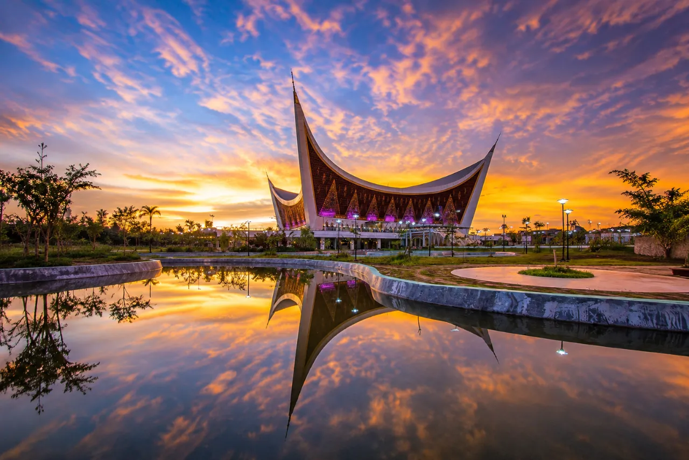
The Grand Mosque of West Sumatra is a majestic architectural masterpiece in Padang City, recognized globally with the prestigious Abdullatif Al Fozan Award for Islamic Architecture. Designed without a traditional dome, its roof features a sweeping four-cornered Minangkabau gonjong roof combined with the motif of Prophet Muhammad's historical turban cloth.
The exterior walls are wrapped in intricate Arabic calligraphy ceramic tiles mimicking traditional Minang Songket textile weaves. The entire structure was engineered to withstand earthquakes up to magnitude 10.0 and serves as a designated tsunami evacuation sanctuary.
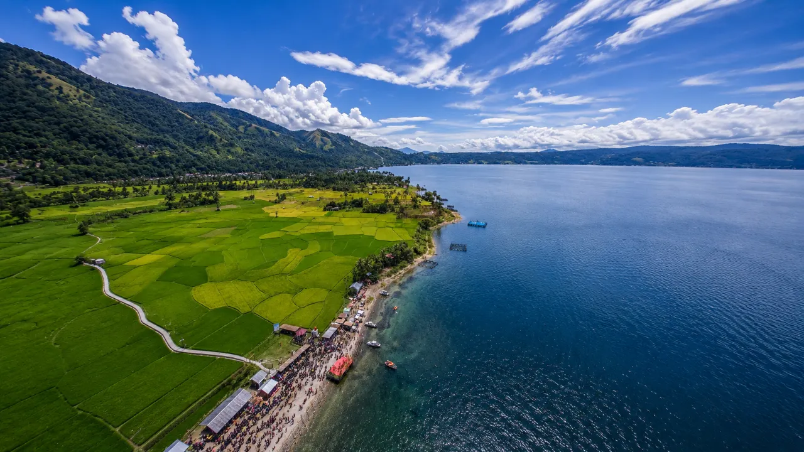
The Mentawai Islands are an exotic archipelago in the Indian Ocean universally celebrated as one of the finest tropical surfing wonderlands on Earth. Comprising four main islands—Siberut, Sipora, North Pagai, and South Pagai—Mentawai boasts over 40 world-class wave breaks including HTs (Hollow Trees), Macaronis, and Lance's Left.
Beyond world-class surfing attracting international pros, Mentawai preserves the indigenous heritage of the Mentawai Tribe, one of Indonesia's oldest civilizations. Travelers can trek through Siberut's virgin rainforests, stay in traditional Uma longhouses, and observe ancient body tattoo art (Titi Mentawai) and Turuk Laggai dances.
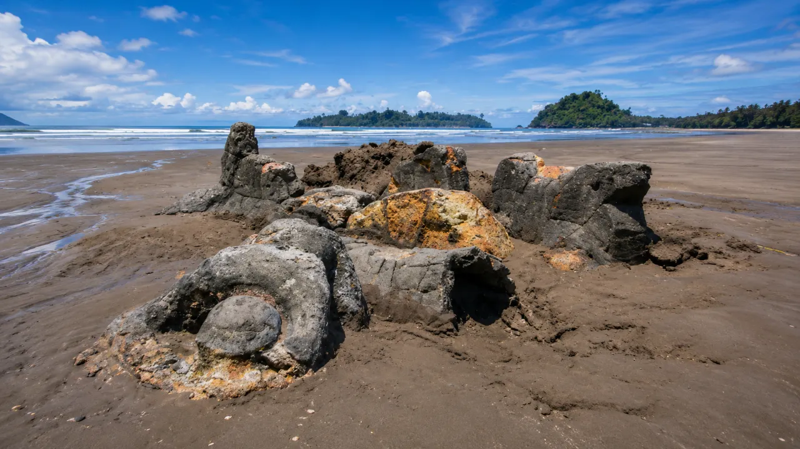
Air Manis Beach is West Sumatra's most famous legendary beach destination located south of Padang City. The beach is renowned nationwide as the site of the 'Malin Kundang Rock' relief, featuring rock formations resembling ship fragments and a prostrate human figure believed to be Malin Kundang turned to stone by his mother's curse for his disobedience.
The Malin Kundang rock site on the shoreline serves as a focal point for visitors to capture photos and reflect upon the profound cultural moral of filial piety and respect toward parents in Minangkabau heritage.

Silokek Geopark in Sijunjung Regency is an ancient geological heritage area recognized as an Indonesian National Geopark. The site showcases a mesmerizing landscape of ancient karst rock formations dating back over 350 million years, towering over the rushing Batang Kuantan River.
At Silokek Geopark, visitors can enjoy white water rafting down the Batang Kuantan River, explore subterranean caves filled with ancient stalactites like Ngalau Bijo Cave, and experience virgin tropical rainforests harboring protected wildlife.

Thousand Rumah Gadang Village in Nagari Koto Baru, South Solok Regency, is a traditional Minangkabau cultural settlement featuring hundreds of centuries-old Rumah Gadang standing side-by-side. The area was awarded Most Popular Traditional Village in Indonesia by the Ministry of Tourism.
These ancient homes belong to various Minangkabau clans (including Malayu, Bariang, Durian, and Tigo Lareh) with distinct gonjong roof styles ranging from four-horned to gajah maharam designs. Remarkably, most of these historic homes remain actively inhabited by local families.
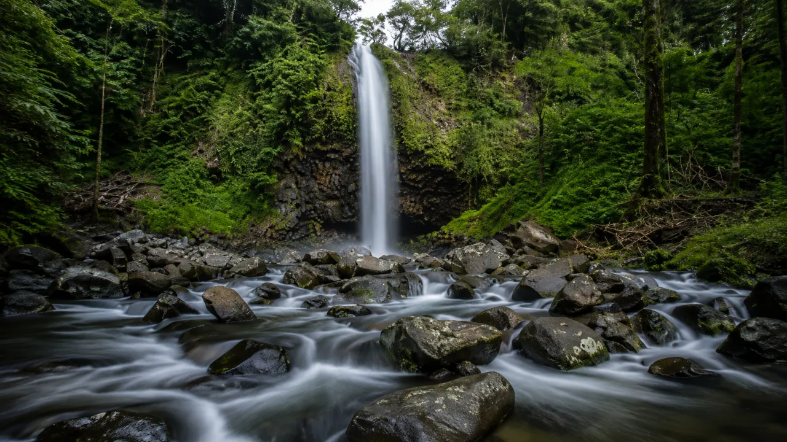
Lembah Anai Waterfall is an iconic natural mascot of West Sumatra, uniquely located directly beside the main highway connecting Padang and Bukittinggi. Plunging from a height of approximately 35 meters, the waterfall originates from the pristine, icy springs of Mount Singgalang, carving through the tropical cliffs of the Lembah Anai Nature Reserve.
Travelers traversing this highway inevitably pull over to rest and enjoy the refreshing mist carried by the wind from the falls. During the rainy season, the water volume increases significantly, producing a dramatic, thunderous natural roar.
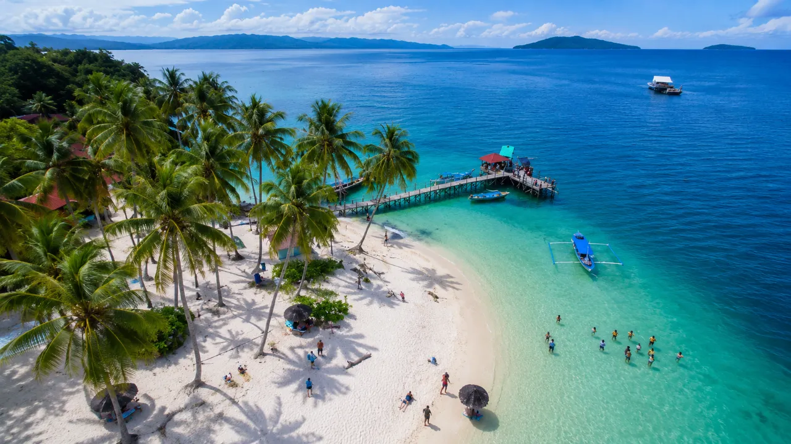
Pasumpahan Island is a tiny tropical paradise in the western waters of Padang City, rapidly trending on social media for its Maldives-like crystal clear waters. The beach features pure, flour-like white sand, while the sea transitions through incredibly beautiful gradients of pristine turquoise.
The waters surrounding Pasumpahan are teeming with healthy coral reefs, serving as a sanctuary for thousands of vibrant tropical reef fish. This makes the island a prime spot for snorkeling, scuba diving, and relaxing on inflatable floaties in the calm, shallow lagoon.
Puncak Cemara Sawahlunto is nestled within the Ombilin Coal Mining World Heritage area of Sawahlunto recognized by UNESCO. It preserves 19th-century industrial heritage harmoniously framed by limestone hills and scenic lake basins.
The destination boasts remarkable visual allure with its photogenic topography, making it a sought-after retreat for ecotourists, photographers, and travelers seeking the tranquil spirit of Minangkabau nature.
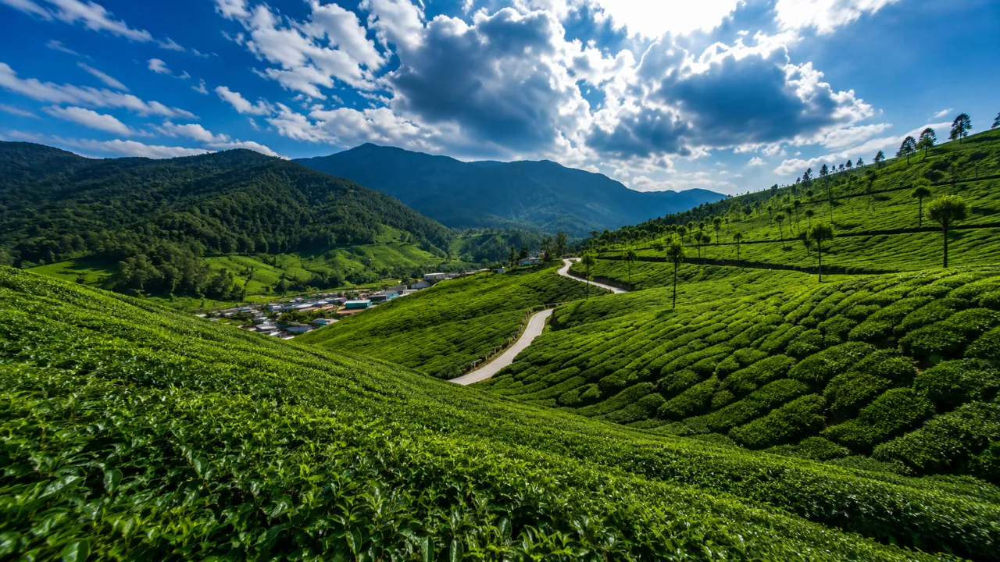
The Alahan Panjang Tea Plantation in Solok Regency is one of the highest tea estates in Indonesia, rolling like an endless green carpet over 1,500 meters above sea level. Situated on the route to the Twin Lakes, this vast plantation offers a distinctly cool highland climate with fresh crisp air averaging 15-20 degrees Celsius.
Mornings here are truly magical when a thin mist descends over the tea shoots while local pickers begin their work wearing traditional woven bamboo hats. Visitors can stroll through the alleys between the tea bushes, hunting for instagrammable, naturally green photo spots.
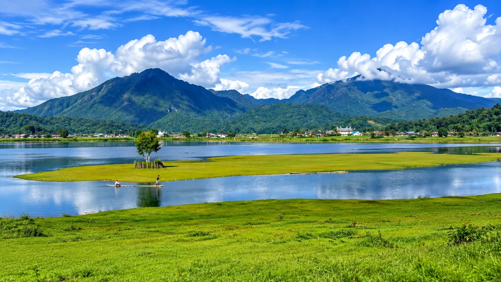
Tarusan Kamang is a fascinating geological phenomenon dubbed the 'Magic Lake', located in Kamang Magek District, Agam Regency. This karst lake exhibits a unique cycle: during certain seasons it fills with clear water resembling a proper lake, yet at other times it drains completely, transforming into a lush green meadow where locals graze cattle.
This ebb and flow phenomenon originates from underground rivers flowing through ancient limestone crevices, a mechanism not entirely mapped. When the lake is full, its crystal clear water mirrors the surrounding lush trees and the Barisan mountain ridges.
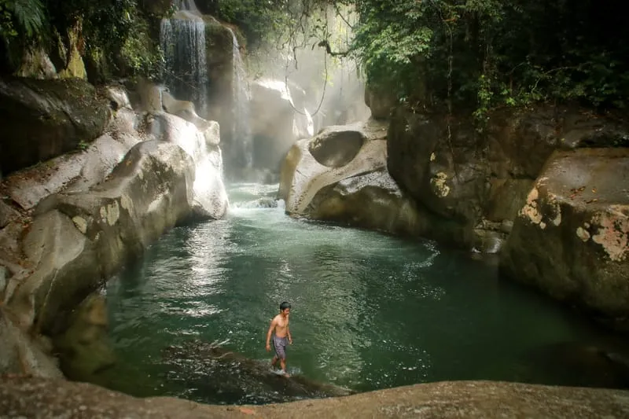
Nyarai Waterfall is a hidden ecotourism gem nestled within the Gamaran Protected Forest in Padang Pariaman Regency. Reaching the falls requires a 3.5 to 5-kilometer guided trek through pristine tropical rainforest lasting approximately 1.5 to 2 hours.
Formed over millions of years by breccia rock erosion from swirling river currents, Nyarai features a stunning emerald-green natural pool, crystal clear and deep, enclosed by massive mossy boulders within virgin jungle.

Harau Valley is a spectacular granite nature reserve in Limapuluh Kota Regency, celebrated globally as the 'Yosemite of Indonesia'. The valley is enclosed by sheer granite cliffs rising 100 to 500 meters high, forming a dramatic natural amphitheater surrounding emerald rice paddies on the valley floor.
Behind its soaring granite walls, Harau Valley harbors a collection of pristine waterfalls cascading straight from cliff summits, including Sarasah Bunta, Sarasah Murai, and Aka Barayun. The soothing sound of falling water paired with wild jungle bird calls provides a therapeutic natural retreat for visitors.
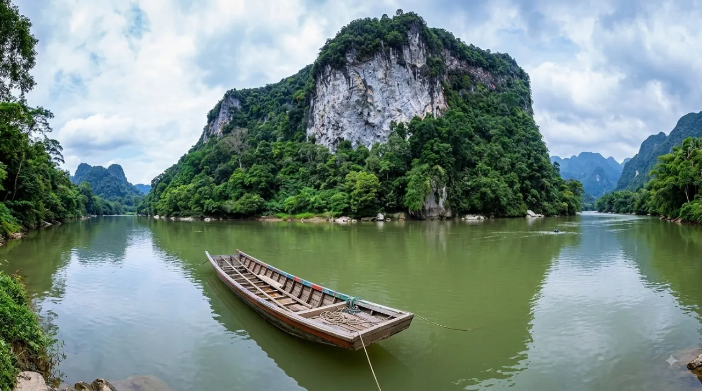
Bayang Living Root Bridge is a stunning bio-architectural marvel located in Nagari Puluik-Puluik, Pesisir Selatan Regency. This natural bridge was initiated around 1890 by Pakih Sohan, a local Islamic teacher who intertwined the young aerial roots of Banyan trees (Ficus benjamina) on opposite riverbanks so his students could cross the Bayang River.
Over more than a century, the living roots grew and naturally bound together, forming a roughly 25-meter bridge that strengthens with each passing year, unlike man-made structures.
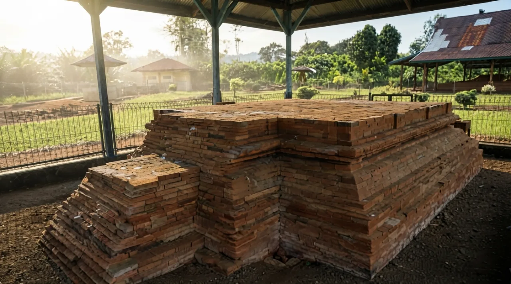
Padang Roco Temple is a 13th-century Buddhist temple complex from the Malayu Dharmasraya Kingdom (Swarnabhumi) located in Dharmasraya Regency. This historically significant archaeological site was the destination of the Pamalayu Expedition from the Singhasari Kingdom, where King Kertanegara gifted the sacred Amoghapasa statue to King Tribhuwanaraja.
The complex comprises four red-brick temple structures (Padang Roco I through IV) showcasing Tantric-Mahayana Buddhist architecture. The main temple measures 21x21 meters with staircases facing all four cardinal directions, demonstrating the advanced civilization of ancient Sumatran maritime kingdoms.
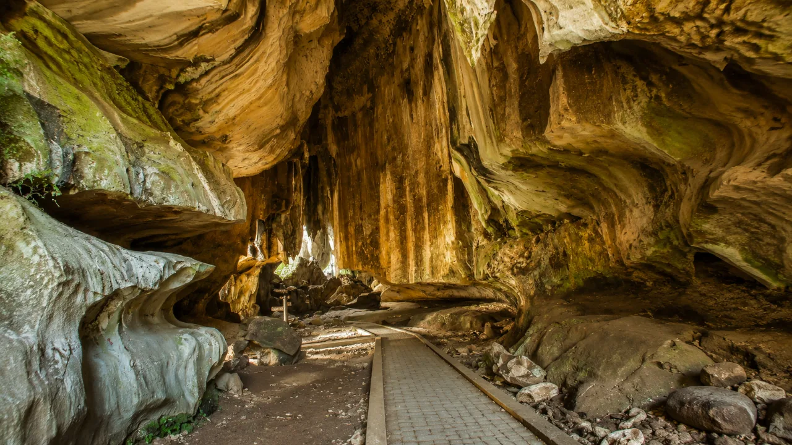
Batu Kapal Cave is an ancient geological wonder located in South Solok Regency. This karst cave formed during the Permian Period (250 to 299 million years ago) from marine limestone deposits uplifted by tectonic activity. First discovered by plantation workers in 1984 and opened for ecotourism in 2017.
The cave features four main chambers whose towering karst walls remarkably resemble the multi-deck interior of a massive wooden ship (kapal), hence the name. Natural mineral stains create stunning colorful wall patterns in gradients of green, yellow, orange, brown, and white.
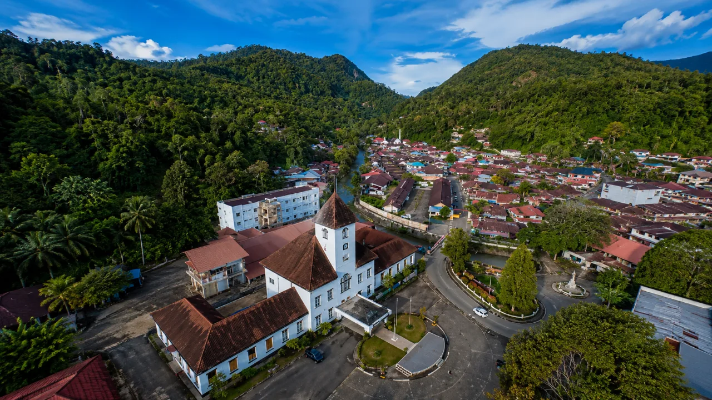
Sawahlunto is a historic coal mining city established in 1888 by Dutch industrial engineers as Southeast Asia's first deep-shaft coal mine. In July 2019, UNESCO officially designated the Ombilin Coal Mining Heritage of Sawahlunto as a World Heritage Site.
Key attractions include Lubang Mbah Soero, a preserved 185-meter underground coal mining tunnel named after a revered mine foreman. The complex also features an industrial living museum with exotic Dutch colonial architecture, the Goedang Ranoet coal processing depot, and the historic Mak Itam steam locomotive (E1060).
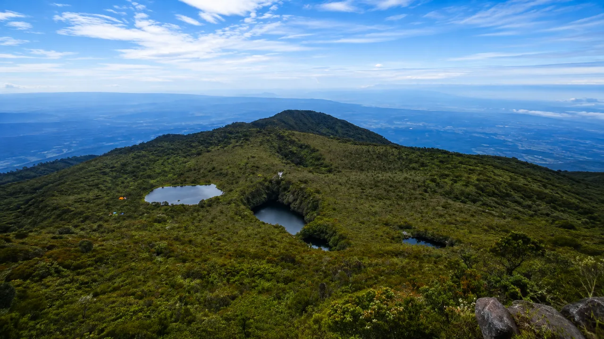
Mount Talamau stands at 2,912 meters above sea level, making it the highest peak in all of West Sumatra. This dormant complex volcano in West Pasaman Regency is shrouded in rich local folklore about guardian mountain spirits and harbors an exceptionally rare geological phenomenon.
Near its summit lies a remarkable cluster of 13 natural volcanic crater lakes (telaga), each varying in size and water color, including Telaga Puti Sangka Bulan, Telaga Satwa, and Telaga Rajo. This 13-lake summit phenomenon is extremely rare among the world's volcanoes.
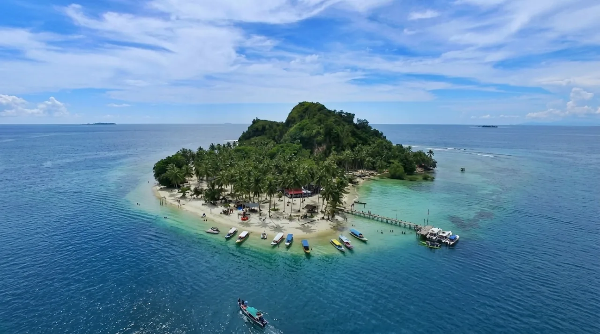
Sirandah and Pagang Islands are two uninhabited tropical islands in the waters of Bungus Teluk Kabung, conserved as marine sanctuaries and ecotourism destinations. Both islands boast pristine white sand beaches surrounded by vibrant shallow coral reefs that serve as habitat for Hawksbill sea turtles and thousands of tropical reef fish.
The iconic feature of Sirandah Island is Batu Sirandah, a giant natural sea stack rock shaped remarkably like a resting sea turtle. This iconic formation has become the most sought-after photo spot in the island cluster.
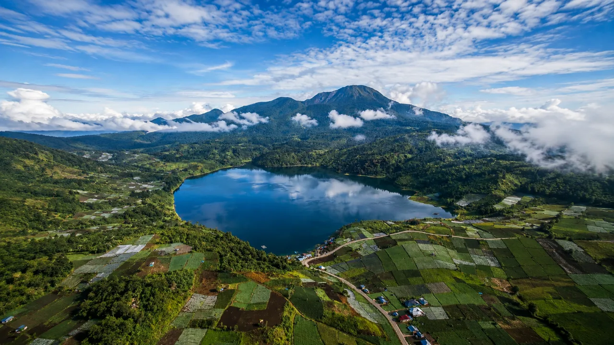
Mount Talang is an active stratovolcano standing at 2,597 meters above sea level in Solok Regency. Tucked at its southern foot lies Talang Crater Lake, a volcanic crater lake formed by ancient explosive eruptions, now a pristine emerald-green mirror lake enclosed by steep volcanic ridges and pine forests.
Unlike the popular Twin Lakes, Talang Lake offers a far more isolated and pristine natural serenity. Its perfectly still surface mirrors the surrounding mountains and trees, creating an incredibly photogenic natural mirror illusion.
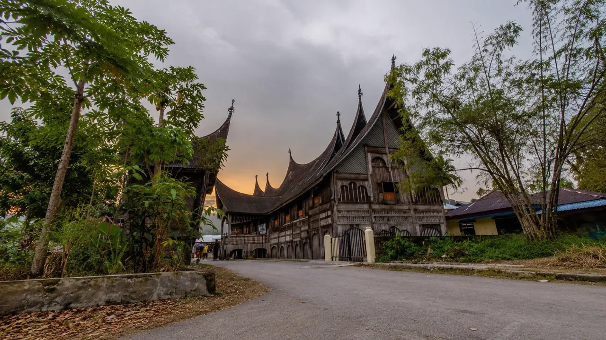
Kelok 9 Flyover is a modern Indonesian civil engineering masterpiece standing majestically amid the pristine wilderness of the Air Putih Nature Reserve in Lima Puluh Kota Regency. Originally built by the Dutch colonial administration between 1908 and 1914 to connect West Sumatra and Riau through steep valleys, the route was transformed into a 943-meter multi-tiered flyover system with 2 km of access roads, inaugurated in 2013.
The six-curved elevated bridge rests on towering concrete pillars soaring over lush tropical river valleys enclosed by sheer green cliff faces. The crisp mountain air combined with morning mist creates a breathtaking panorama for all travelers.
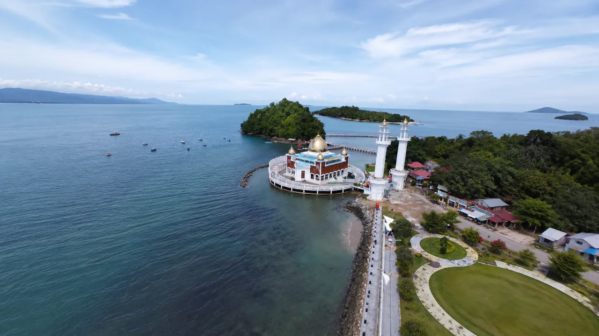
Carocok Beach in Painan is a premier coastal destination in Pesisir Selatan Regency, offering soft sandy beaches, crystal-clear calm waters, and scenic wooden footbridges connecting the mainland to Bukit Batu Kereta and Cingkuak Island.
Cingkuak Island holds immense colonial historical significance. In 1660, the Dutch East India Company (VOC) built Fort van den Bosch on this tiny islet as their primary pepper and gold trading depot on Sumatra's west coast. Ancient stone fort ruins remain open for exploration.
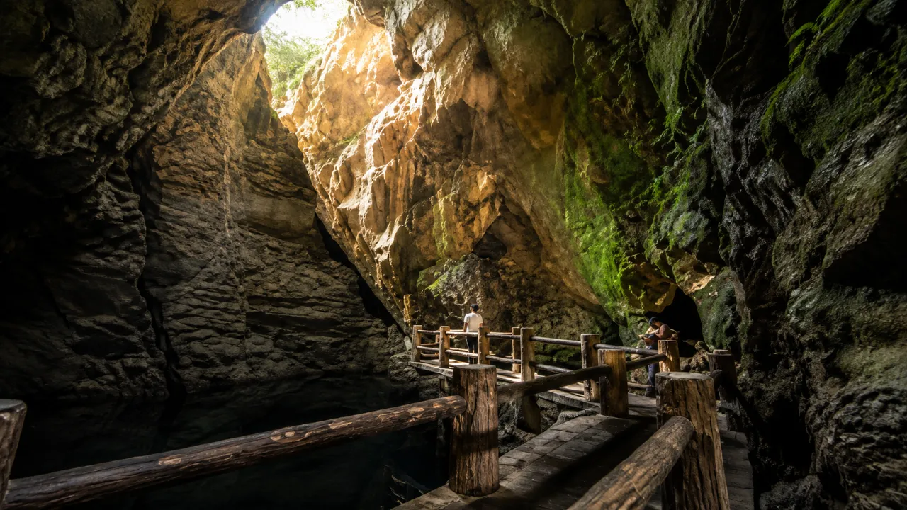
Ngalau Indah Cave is an ancient karst cave and scenic highland destination on the slopes of Mount Sago, just 4 kilometers from downtown Payakumbuh. Formed by millions of years of limestone dissolution, it features cavernous underground chambers adorned with spectacular stalactites and stalagmites.
Inside the cave, visitors can discover the unique Batu Goncang—a suspended rock formation that echoes like a gong when struck—alongside bridal chair-shaped stones. Illuminated concrete walkways ensure a safe and enchanting subterranean walk through to the opposite hillside opening.
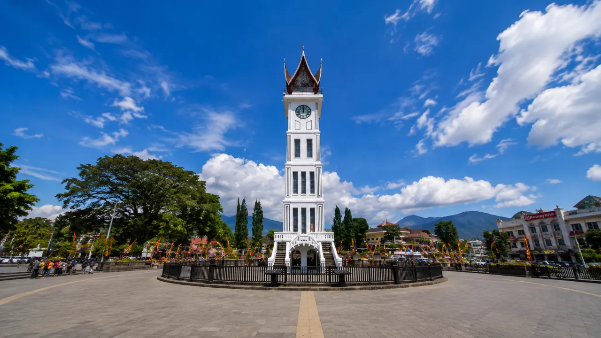
Jam Gadang is an iconic 26-meter historic clock tower situated in the heart of Bukittinggi City, serving as the landmark of West Sumatra tourism. Built in 1926 as a gift from the Queen of the Netherlands, it houses a rare German clock mechanism crafted by Johan Vortmann, identical to the mechanism powering London's Big Ben.
The architectural uniqueness of Jam Gadang shines in its rooftop structure, which evolved through history into the traditional Minangkabau gonjong horn-shaped roof. The surrounding plaza is meticulously landscaped into a spotless pedestrian park hosting cultural arts and social activities.
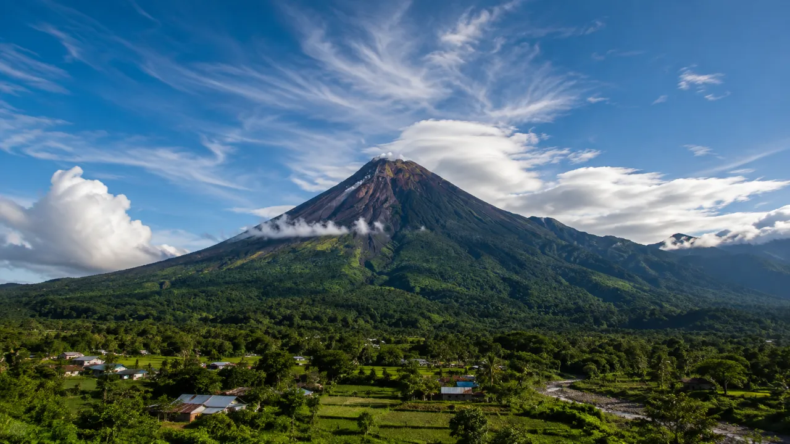
Mount Marapi is an active stratovolcano rising 2,891 meters above sea level, holding the most sacred position in Minangkabau historical origin lore (Tambo Minangkabau). According to ancient oral tradition, the ancestors of the Minang people landed their vessel upon Marapi's peak when prehistoric floods submerged the lowlands, later descending to establish Nagari Pariangan.
Marapi features a rugged active volcanic crater complex emitting thick sulfur plumes, creating an exotic moonscape of volcanic rock and ash fields near its summit.
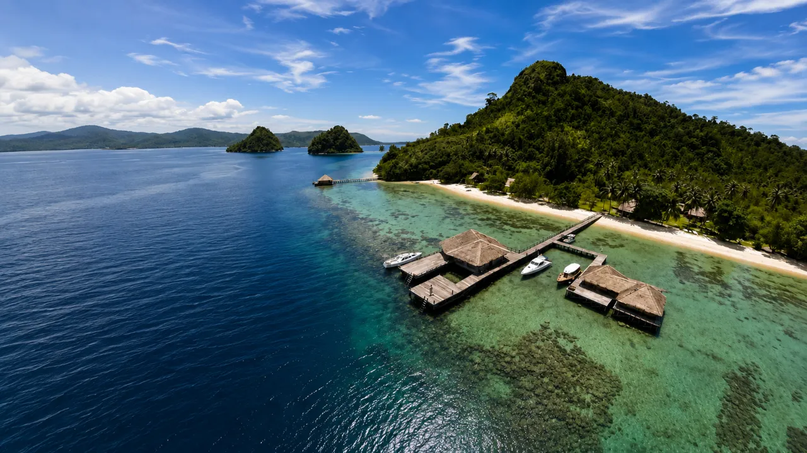
Cubadak Island is an idyllic 40-square-kilometer tropical island sanctuary tucked within the tranquil waters of Tarusan Bay in Pesisir Selatan Regency. Formed from an ancient volcanic caldera, it boasts crystal-clear turquoise waters, soft white beaches, and dense virgin rainforest.
The island gained international acclaim through its eco-resort developed to preserve the natural habitat of native wildlife including long-tailed macaques, hornbills, wild deer, and sea eagles. It was famously featured in German and French travel documentaries.
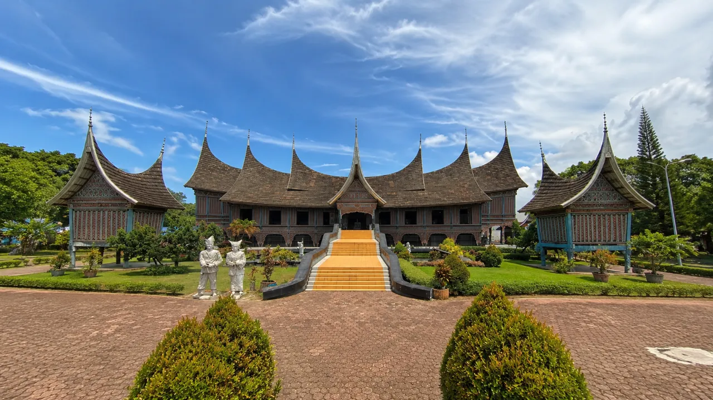
The Adityawarman State Museum is the largest and most comprehensive cultural museum in West Sumatra, located in central Padang. Inaugurated in 1977 and named after King Adityawarman—the 14th-century ruler of the Malayu-Pagaruyung Kingdom—it serves as the definitive guardian of Minangkabau history and traditions.
The main building is a grand embodiment of the traditional Rumah Gadang Gajah Maharam style featuring 20 curved gonjong roof peaks and intricate floral wood carvings. The courtyard features classic rice granaries (Rangkiang) and historical monuments.
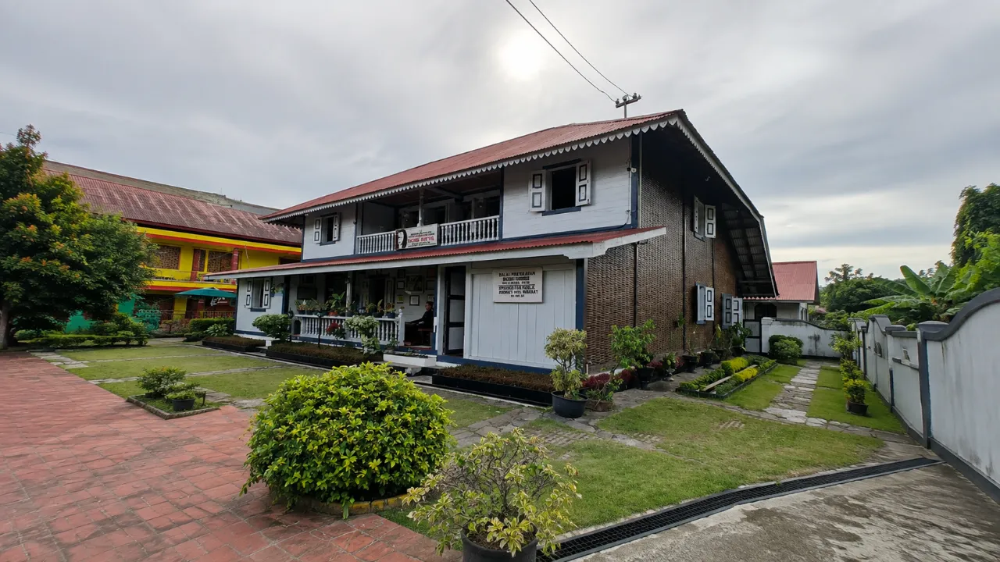
Bung Hatta Birthplace Museum is the historic timber stilt house where Dr. Mohammad Hatta—co-proclaimer of Indonesian Independence and first Vice President—was born on August 12, 1902. Located on Jalan Soekarno-Hatta in Bukittinggi, the house has been meticulously restored to its exact early 20th-century condition.
The structure reflects a harmonious blend of traditional Minangkabau timber construction and colonial-era functionality, featuring family bedrooms, bachelor rooms, reception halls, earthen-floor brick kitchens, and backyard stables.
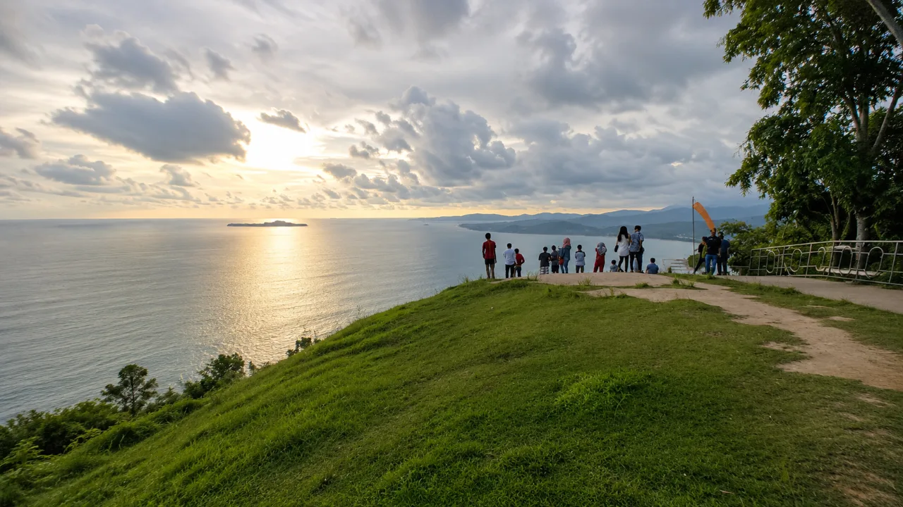
Langkisau Hill is a scenic vantage point rising 140 meters above sea level overlooking the bay of Painan in Pesisir Selatan Regency. Nationally recognized as one of western Indonesia's premier paragliding and hang-gliding launch sites, it offers an unmatched 360-degree coastal panorama.
From the summit, visitors enjoy dramatic views spanning the curving white sands of Salido Beach, the deep blue waters of Painan Bay, offshore tropical coral islands, and emerald mountain ridges embracing the coastal town.
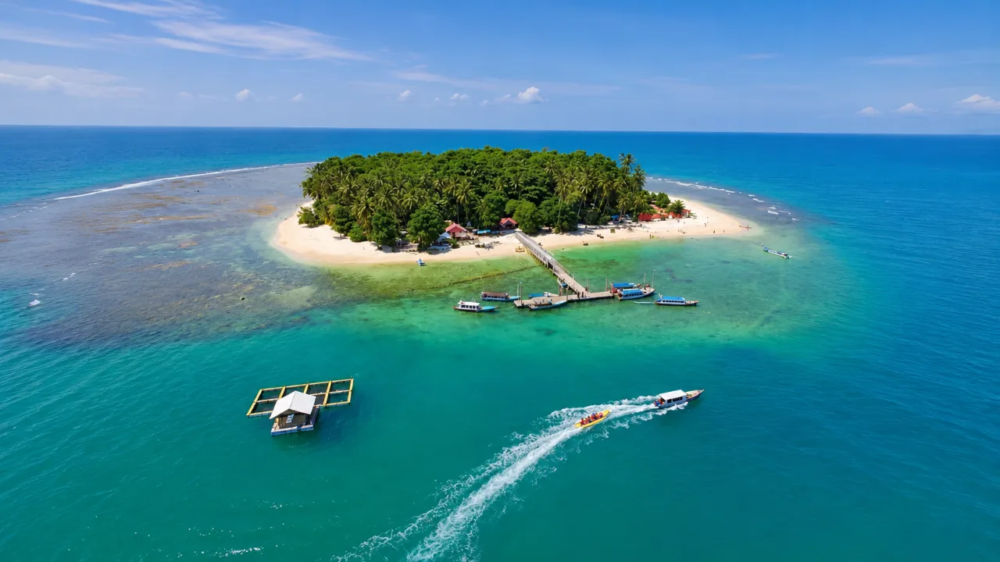
Gandoriah Beach is the premier coastal hub of Pariaman City, featuring shady coastal pine trees and gentle sandy shores. Named after the heroine of the classic Minangkabau epic 'Anggun Nan Tongga Magek Jabang', it hosts the grand climax of the annual Tabuik Festival.
A short 15-minute boat ride brings visitors to Angso Duo Island, a tiny white-sand coral island with crystal-clear waters. The island houses the sacred 15th-century tomb of Katik Sangko, an early Islamic propagator revered across West Sumatra.
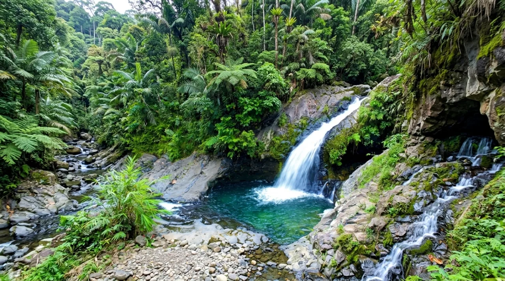
Lubuak Tampuruang Waterfall is a hidden ecotourism retreat situated at the foot of Mount Nago in Kuranji District, just 12 kilometers from downtown Padang. It is named 'Lubuak Tampuruang' because the natural river basin beneath the falls curves smoothly like half a coconut shell (tampuruang).
This 15-meter waterfall cascades clear, refreshing mountain water over terraced andesite boulders into an emerald-green natural plunge pool. Enclosed by a dense canopy of tropical rainforest, the setting is peaceful, cool, and shielded from urban noise.

Istano Basa Pagaruyung is a grand replica of the Pagaruyung Royal Palace located in Batusangkar, Tanah Datar Regency. This impressive three-story timber palace was constructed using traditional joinery without metal nails, supported by 72 main wooden pillars and decorated with colorful wood carvings reflecting Minangkabau cultural wisdom.
Inside, visitors can explore a cultural museum exhibiting royal regalia, ancient heirlooms, historic cannons, and royal princess chambers draped in luxurious handwoven songket textiles. Guests can rent authentic Minangkabau royal costumes to take memorable photographs on the royal throne or across the palace lawns.
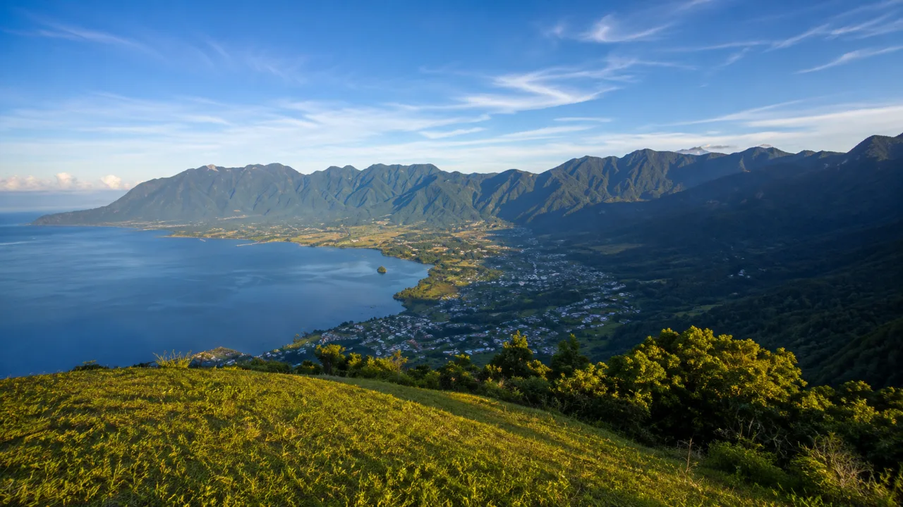
Puncak Lawang is a scenic highland viewpoint in Agam Regency situated 1,210 meters above sea level, offering an unmatched aerial vista overlooking Lake Maninjau. From this ridge, the blue techto-volcanic lake enclosed by steep caldera walls can be appreciated in a breathtaking 360-degree panorama.
Puncak Lawang is globally acclaimed as one of Southeast Asia's premier paragliding flight spots owing to its exceptionally stable thermal winds. Travelers can experience tandem paragliding flights alongside certified instructors, soaring freely over Lake Maninjau.
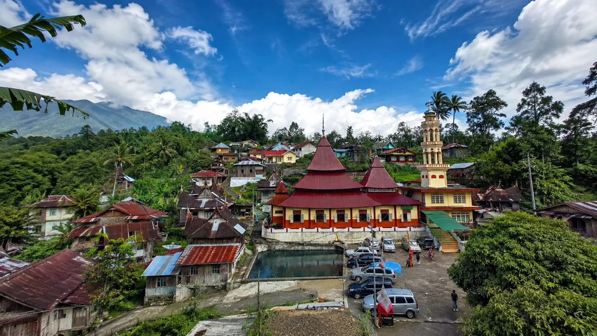
Nagari Pariangan in Tanah Datar Regency rests gracefully on the slopes of Mount Marapi at 700 meters above sea level and was named by Budget Travel media as one of the most beautiful villages in the world. This historic village is revered as the oldest nagari in Minangkabau, the birthplace of Minang culture.
The village layout features centuries-old wooden Rumah Gadang structures set along stone pathways and lush terraced rice fields. At its center stands the historic wooden Pariangan Mosque alongside natural hot springs fed directly by Mount Marapi.
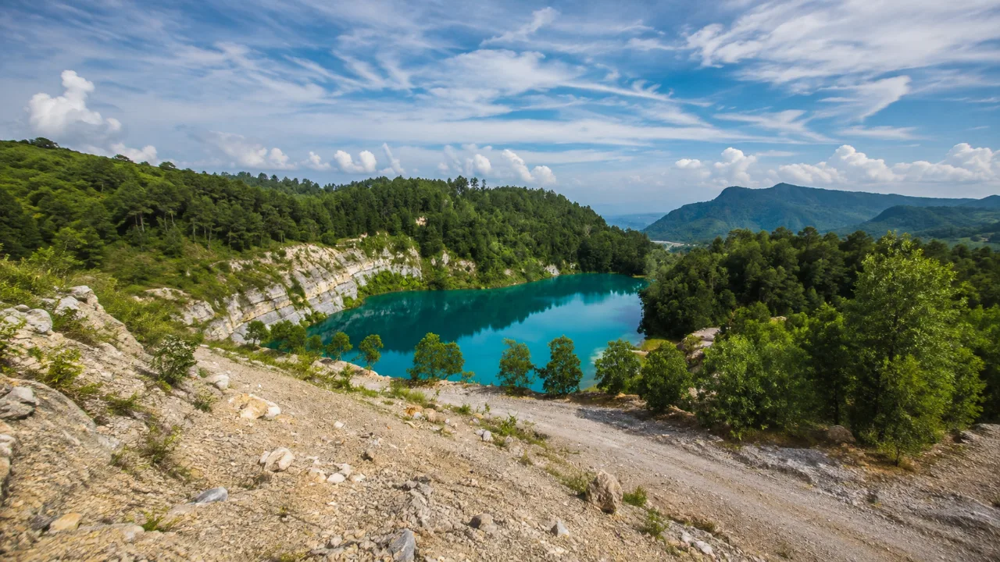
Sawahlunto Blue Lake is an exotic artificial basin lake formed within a former open-pit coal mining concession in Parambahan, Talawi District, Sawahlunto City. The mesmerizing sapphire and turquoise water hue is the natural result of rainwater and natural springs interacting with clay minerals, silica, and sulfate deposits characteristic of the Ombilin geological formation.
Enclosed by chalky white rock ridges, wild brush, and pine groves, the stark contrast between the vivid blue waters and the arid rocky cliffs yields a dramatic, photogenic landscape reminiscent of natural volcanic craters abroad.
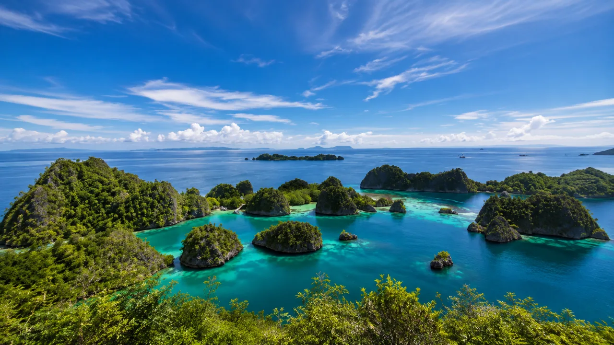
Mandeh Marine Tourism Estate in Pesisir Selatan Regency is an 18,000-hectare tropical marine paradise dubbed the 'Raja Ampat of West Sumatra'. This tranquil turquoise bay is studded with lush green islets including Pulau Setan, Pulau Cubadak, Pulau Sironjong, and Pulau Kapo-Kapo.
Mandeh's underwater world features pristine coral reefs, abundant tropical fish, and the historic MV Boelongan Nederland shipwreck favored by international scuba divers. Tourists can enjoy water sports including jet skiing, banana boating, and snorkeling.
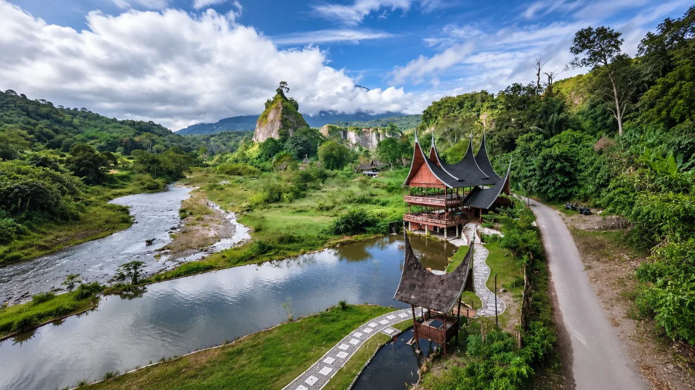
Sianok Canyon is a breathtaking 100-meter deep gorge stretching 15 kilometers along the border of Bukittinggi City and Agam Regency. This tectonic fault line features vertical cliff walls cradling a meandering stream, serving as a sanctuary for wildlife including macaque monkeys and hornbills.
Perched atop the canyon lies Panorama Park, providing entrance to the Japanese Tunnel (Lubang Jepang), a 1,400-meter underground military bunker constructed during World War II in 1942. The subterranean complex includes ammunition rooms, holding cells, and observation posts.
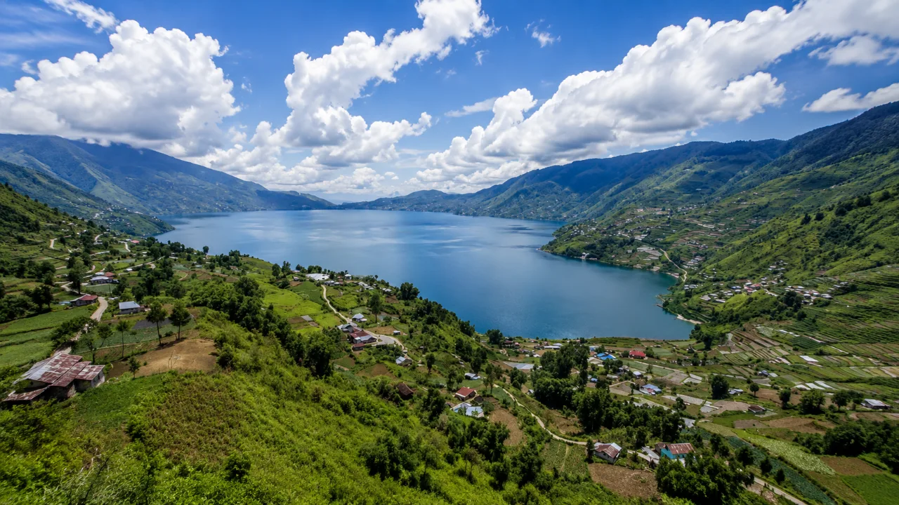
Twin Lakes (Danau Kembar) is the iconic name for two breathtaking volcanic lakes located side-by-side in Lembah Gumanti District, Solok Regency: Danau Diatas and Danau Dibawah. Situated on the chilly highlands of Alahan Panjang at 1,531 meters above sea level, the area is enclosed by green tea estates and fertile vegetable farms.
The unique naming of the Twin Lakes stems from a geographical irony: Danau Diatas ('Upper Lake') actually sits lower than the main road, while Danau Dibawah ('Lower Lake') rests higher on the hills. Pristine waters paired with chilly air create a cool mountain atmosphere resembling European climates.

Janjang Koto Gadang is a majestic fortified stairway pedestrian trail spanning down the precipitous cliffs of Sianok Canyon, linking the city of Bukittinggi to the heritage silversmith village of Koto Gadang in Agam Regency. First conceptualized in the colonial era and fully inaugurated in its modern form in 2013, this architectural walkway stretches approximately 1 kilometer across a lush canyon basin.
The prominent feature of Janjang Koto Gadang is its meandering path cascading down and climbing up sheer cliffs complete with battlements and small watchtowers, earning it the affectionate moniker 'The Great Wall of Minangkabau'. At the valley floor, travelers cross a suspended suspension footbridge hovering over the pristine Batang Sianok river against dramatic 100-meter sedimentary cliff facades.

Padang Beach (locally known as 'Taplau') and the Siti Nurbaya Bridge represent the urban coastal tourism heartbeat of West Sumatra's provincial capital. Overlooking the mouth of the Batang Arau River, the bridge, crowned with ornate Minangkabau gonjong horn-shaped luminaires, was opened in 2002 and commemorates the immortal classic Indonesian romantic tragedy written by Marah Rusli.
The unique appeal lies in the seamless juxtaposition between the open expanse of the Indian Ocean and the forested Mount Padang promontory flanking the historic old harbour. As twilight descends, the wide waterfront promenade transforms into an open-air culinary haven where visitors savor roasted sweet-spicy corn, savory sate-sauced crackers, young coconuts, and grilled bananas while watching the golden sunset dip below the oceanic horizon.
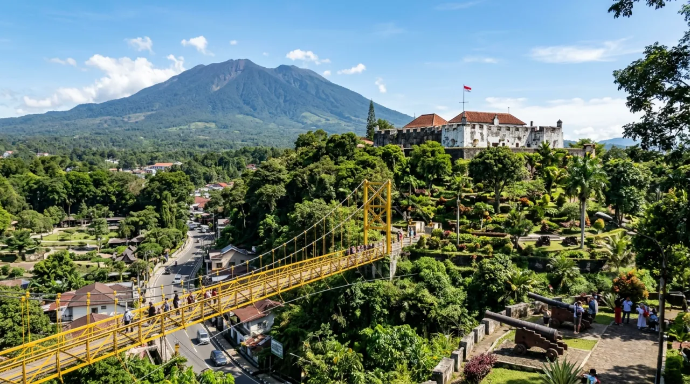
Fort de Kock is a Dutch colonial military fortification erected in 1825 by Captain Bauer on Jirek Hill during the fierce Padri War. It served as a strategic military redoubt for colonial forces seeking to repel the Minangkabau resistance fighters commanded by national hero Tuanku Imam Bonjol in the Agam highlands.
Today, the historical fort complex has been revitalized into a leafy urban park linked to the Kinantan Zoological & Cultural Park via the Limpapeh Bridge, an artistic 90-meter suspension pedestrian overpass straddling the city boulevard adorned with traditional Minang gonjong crests. The hilltop preserves original 19th-century iron cannons alongside an observation tower granting 360-degree vistas of Bukittinggi framed by Mount Singgalang and Mount Marapi.

The Bonjol Equator Monument is a globally recognized geographical and historical landmark situated in Bonjol District, Pasaman Regency, directly bisecting the Earth along the zero-degree latitude line (Equator). This historic territory is the birthplace of Tuanku Imam Bonjol (Muhammad Syahab), one of Indonesia's foremost National Heroes who led the legendary Padri resistance war (1803-1838).
The standout attraction features an equatorial globe monument spanning across the Trans-Sumatran highway crowned with traditional Minangkabau gonjong architecture. Within the complex stands the Tuanku Imam Bonjol Museum, housing antique Minang weaponry, 19th-century Islamic historical manuscripts, and vivid dioramas depicting the heroic defense of the Bonjol clay fortress against Dutch colonial siege engines.
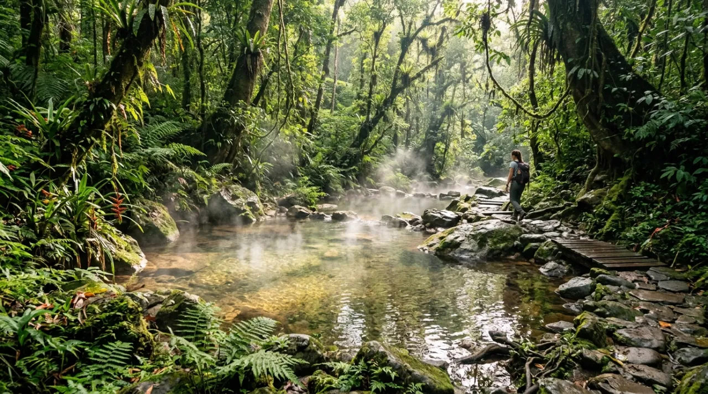
Rimbo Panti Nature Reserve is a pristine primary tropical rainforest sanctuary spanning over 2,550 hectares in the northern expanse of Pasaman Regency. Protected since the 1930s, Rimbo Panti serves as a critical botanical habitat for Sumatra's legendary giant blooms (Rafflesia arnoldii and Amorphophallus titanum), ancient Dipterocarp hardwoods, and rare wildlife including siamang gibbons, Sumatran tigers, and tapirs.
The most fascinating highlight hidden within the dense wilderness is a cluster of bubbling natural geothermal hot springs erupting alongside the forested highway. Thick billowing sulfur steam wafts through ancient giant ferns and towering canopy trees, producing a dramatic, primeval ambiance revered by landscape photographers and wilderness travelers.

Pamutusan Island is an exquisite tropical haven nestled within the marine cluster of Teluk Kabung, gracing the coastal frontier between Padang City and Pesisir Selatan Regency. Named 'Pamutusan' (meaning 'severed' in the Minangkabau tongue) due to its unique sand spit that connects two land masses at low tide and disappears underwater at high tide, appearing to sever the island in two.
Covering approximately 8 hectares, the island is enveloped by sparkling turquoise waters teeming with exceptionally well-preserved shallow fringing coral reefs. The abundant marine ecosystem featuring clownfish, giant clams, and vibrant hard coral gardens makes it a paradise for snorkeling, paddleboarding, and underwater photography.

Puncak Gobah is a breathtaking highland lookout located in Nagari Aripan, X Koto Singkarak, Solok Regency. Perched at approximately 600 meters above sea level, this scenic ridge offers one of the most magnificent aerial perspectives to behold the colossal expanse of Lake Singkarak framed by mountain ridges.
The standout highlight is its series of artistic wooden viewing decks shaped like cantilevered Rumah Gadang roofs and treehouses perched over the cliff edge. From here, visitors take in tranquil sapphire lake waters hemmed by the Bukit Barisan mountain range, emerald tiered rice paddies, and the historic colonial railway winding along the lake shoreline.
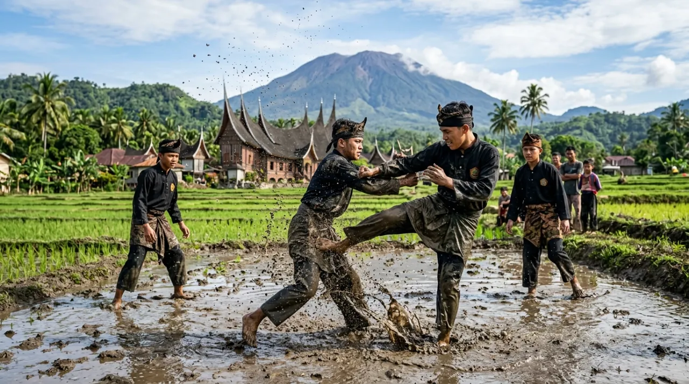
Kubu Gadang Cultural Village is a community-based cultural tourism destination located in Ekor Lubuk, Padang Panjang City. Nestled in a fertile mountain valley flanked by Mount Marapi, Singgalang, and Tandikat at 700 meters altitude, this village seamlessly merges traditional Minangkabau agrarian wisdom with award-winning educational tourism.
The village's signature cultural spectacle is 'Silek Lanyah', an authentic Minangkabau martial art performance executed by young warriors inside flooded muddy rice paddies post-harvest. The swift, acrobatic, and powerful martial movements send mud splashing into the air to the rhythmic thunder of Gandang Tambua drums and haunting Saluang flute melodies, creating an electrifying theatrical show.
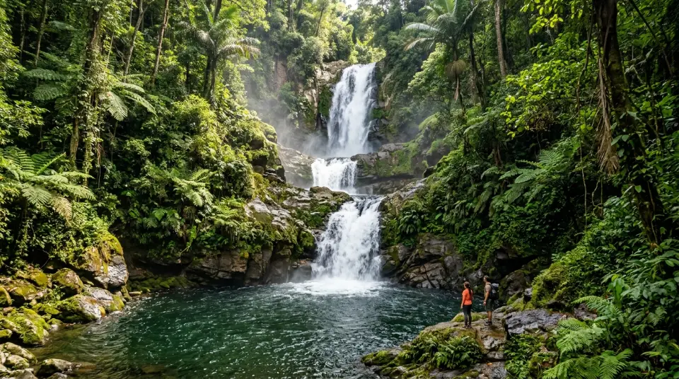
Lubuk Hitam Waterfall is a hidden rainforest ecotourism paradise tucked inside North Teluk Kabung, Bungus Teluk Kabung District, roughly 25 kilometers south of Padang city center. This natural wonder is celebrated for its rare three-tiered geological cascade, each tier boasting distinct drop heights, rock cliff formations, and natural freshwater swimming lagoons.
Reaching the falls involves a scenic trek through local clove and nutmeg groves into dense primary Bukit Barisan tropical forest. The first tier features a gentle 3-meter drop ideal for wading; the second tier rises to 10 meters against towering dark granite rocks; while the third and crowning tier cascades 22 meters down into a deep, crystalline emerald-dark pool.
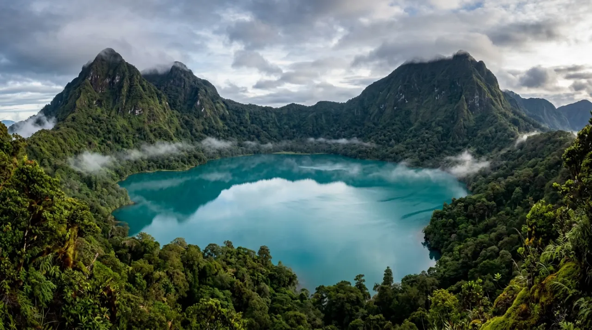
Danau Laut Tinggal (The Solitary Lake) is one of the most isolated and mystical geological wonders in West Sumatra, cradled inside the extinct caldera crater of Mount Malintang at 1,900 meters altitude in West Pasaman Regency. Enclosed by vertical crater walls carpeted in primeval moss and perpetual highland mist, this expansive volcanic lake radiates deep emerald-turquoise waters.
The name 'Laut Tinggal' stems from indigenous lore recounting an ancient primordial ocean left stranded atop a mountain summit. Because of its remote, roadless wilderness geography, it stands as the holy grail for seasoned trekkers undertaking a rigorous 2 to 3-day backcountry expedition through virgin montane cloud forests.

Puncak Polan is a scenic panoramic hilltop rising approximately 400 meters above sea level directly overlooking the UNESCO World Heritage historic coal mining city of Sawahlunto. During the 19th-century Dutch colonial industrial era, this ridge functioned as a strategic telegraph relay and observation post monitoring train movements and the Ombilin coal operations.
Today, Puncak Polan has evolved into one of the premier paragliding and hang-gliding launch ridges in West Sumatra. Tandem flyers and aerial sport enthusiasts soar effortlessly on thermal winds, soaking in aerial vistas of 19th-century Dutch colonial urban planning, terracotta heritage rooftops, historic railway ribbons, and the surrounding green ridges of the Bukit Barisan.

Tiku Beach is a historic coastal gem stretching across Tanjung Mutiara District in Agam Regency. From the 14th through 17th centuries, the ancient port of Tiku stood as one of the most prominent pepper and spice trading harbors along the western coast of Sumatra, welcoming merchant galleons from Gujarat, Persia, China, and Europe long before trade shifted south.
Today, the chief allure of Tiku Beach lies in its expansive gently sloping shoreline bordered by thousands of shaded coastal whispering pines (Casuarina equisetifolia). Along the beach, travelers witness vibrant traditional fishing communities with colorful outrigger wooden boats returning ashore laden with fresh oceanic fish, prawns, crabs, and traditional coastal Sala snacks.
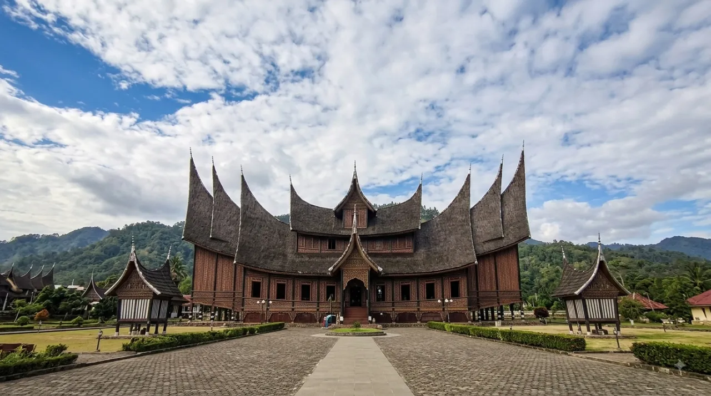
Rumah Gadang is the traditional stilt house of the Minangkabau people, distinguished by its sweeping curved roofs resembling buffalo horns, known as gonjong. More than a residence, this building serves as a grand symbol of Minangkabau's matriarchal social structure, where women hold revered positions as house inheritance owners.
A fascinating feature of Rumah Gadang is its earthquake-resistant architectural engineering. Built entirely without iron nails, solid wooden pillars rest upon flat foundation stones and are connected via flexible wood pegs that absorb seismic shocks during earthquakes.
"Pillar of Custom & Honor of Women (Symbolizing matriarchal dignity and resilient heritage)"

Marosok is a uniquely non-verbal secret bargaining method practiced exclusively in traditional Minangkabau livestock markets such as those in Payakumbuh, Muaro Paneh (Solok), and Tanah Datar. During these transactions, buyer and seller never utter a single word about price.
The mechanism is fascinating: both parties clasp hands underneath a wrapped cloth, sarong, towel, or hat. Price offers and counteroffers are communicated entirely through touch patterns and finger pressure codes—holding specific finger joints, twisting fingers, or tapping palms to represent millions or hundreds of thousands of Rupiah.
"Raso Jo Pareso (Empathy, privacy, and equity in trade)"
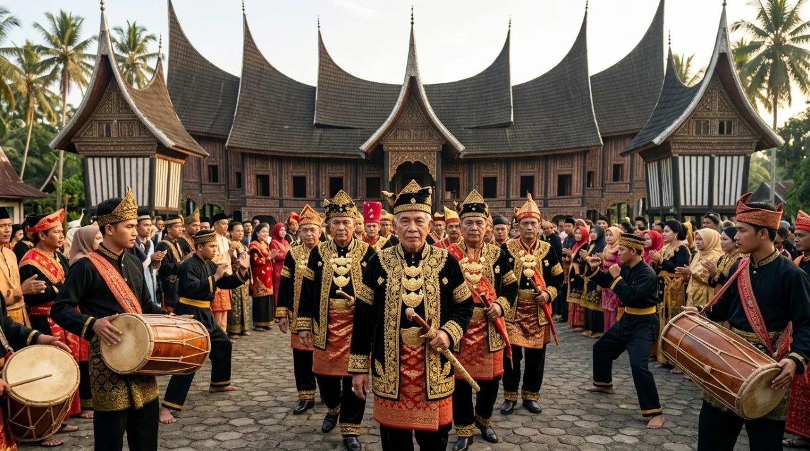
Batagak Penghulu is a sacred ceremony held by a Minangkabau suku (clan) to officially inaugurate and confer a hereditary honorary title (Gala Datuak) upon a new Penghulu (clan leader). This procession is one of the most majestic and costly traditional ceremonies in Minangkabau culture.
Key ritual elements include Mambantai Kabau, the slaughtering of one or more water buffaloes to feast the entire village community. The candidate then recites the Sumpah Sati (Sacred Oath) while holding sacred heirlooms, swearing to govern justly according to the principle of Adat Basandi Syarak, Syarak Basandi Kitabullah.
"Custom Based on Sharia, Sharia Based on the Quran (Foundational Minang governance)"
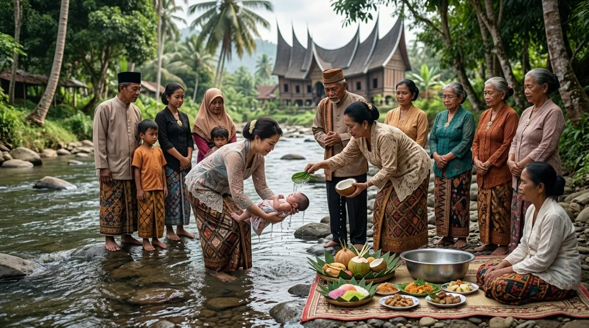
Turun Mandi is a Minangkabau rite of passage ceremony held to formally introduce a newborn infant to nature, the extended family, and the village community. The procession takes place several days or weeks after birth.
The mother and baby are escorted in a ceremonial procession to the local river or natural bathing spring (luhak/pincuran) under a traditional umbrella. Women carry beras kunyit (yellow turmeric rice) scattered into the water, daun tawa-tawa (soothing medicinal leaves), and traditional sweet rice cakes.
"Child Nurtured, Nephew Guided, Villager Respected (Holistic communal responsibility)"
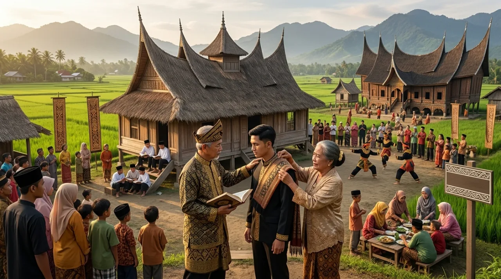
The Surau and Merantau traditions are two deeply interconnected Minangkabau cultural institutions that shape the distinctive character of Minang men. Historically, boys reaching adolescence left their parents' bedrooms to live and sleep at the village surau (prayer hall).
At the surau, elders taught them Quranic recitation, Islamic jurisprudence, Minang oral literature, social ethics, and Silek martial arts. The surau served as a life school that forged the mental resilience and knowledge of young Minang men before they embarked on the next stage: Merantau.
"Venture Out While Young (Migration as character-building cultural imperative)"
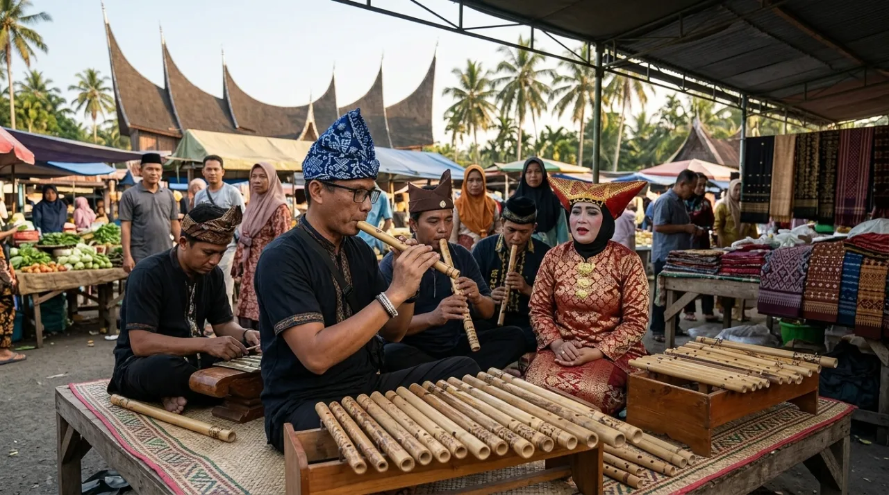
Saluang is a traditional Minangkabau end-blown bamboo flute crafted from talang bamboo with 4 finger holes. The primary mastery of Saluang players lies in circular breathing technique (manitih or pitunang), an advanced breathing method allowing performers to play uninterrupted melodies for hours without pausing for breath.
Saluang is always performed alongside Dendang, vocal poetry singers who chant improvised four-line pantun stanzas. The lyrics express feelings of iba (heartfelt sorrow), deep nostalgic longing for home (mangingat rantau), sharp social satire, or philosophical life advice (pitutur).
"Voice of the Minang Heart (Expression of Minangkabau soul and longing)"

Pacu Jawi is a centuries-old agrarian tradition practiced by Minangkabau rice-farming communities in Tanah Datar Regency to celebrate the post-harvest season. The event rotates across four historical districts: Pariangan, Rambatan, Lima Kaum, and Sungai Tarab.
Unlike standard bull races, Pacu Jawi takes place in deep flooded muddy rice paddies. A daring jockey balances atop a wooden plow frame (singkal) while holding the tails of two powerful bulls. Steering without whips, the jockey directs the animals to sprint straight by biting their tails amid dramatic mud splashes.
"Shared Burden, Shared Joy (Solidarity and upright straight leadership)"
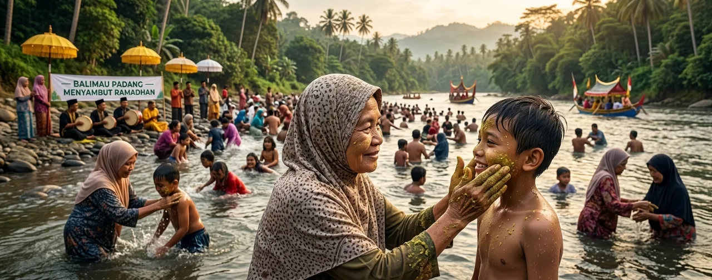
Balimau is a sacred spiritual and physical purification ritual handed down through generations of Minangkabau Muslims, practiced on the afternoon prior to the first day of Ramadan fasting along natural rivers and springs throughout West Sumatra.
The concoction is prepared from wild kaffir limes (limau purut), fragrant pandan leaves, cananga flowers, vetiver roots, and soapy langir tree bark. This aromatic herbal wash is applied to hair and body to symbolize the cleansing of sins and physical purity.
"Purifying Body and Soul to Welcome the Holy Month with Pure Intentions"
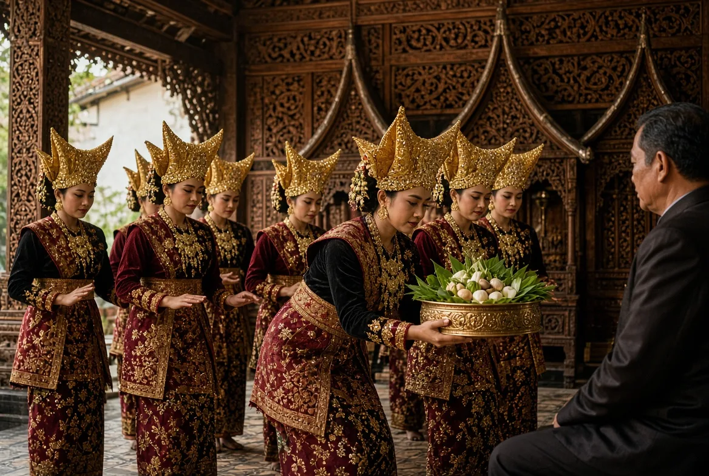
Tari Pasambahan is a sacred ceremonial dance performed as the highest gesture of respect to welcome honored guests, open village assemblies, or inaugurate traditional Minangkabau wedding feasts. It embodies the pinnacle of Minang hospitality and etiquette.
The choreography performed by male and female dancers is deeply rooted in refined martial arts movements of Silek Minangkabau, translated into slow, dignified reverent gestures (sembah). Female dancers wear elaborate traditional costumes crowned with gleaming Suntiang tiaras.
"Betel & Areca Leaf (Symbol of hospitality and utmost respect for honored guests)"
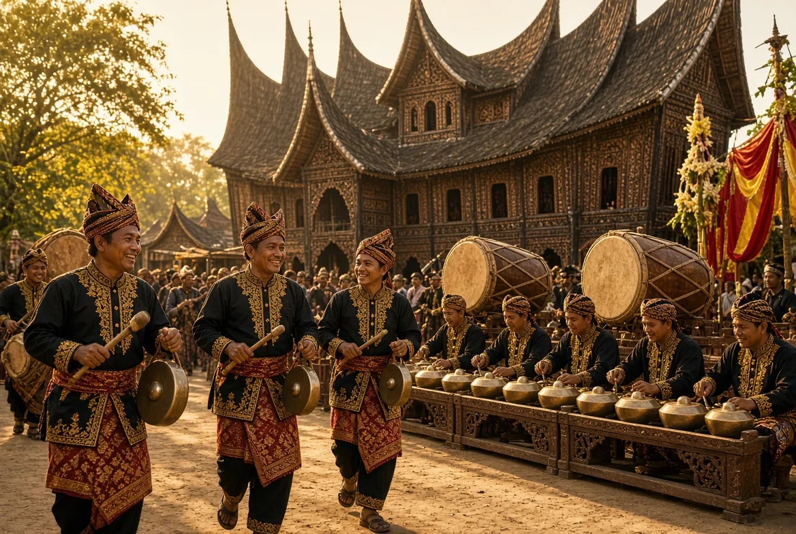
Talempong is a traditional Minangkabau melodic bronze kettle gong instrument dating back to Southeast Asia's Bronze Age Dong Son culture, serving as the musical heartbeat of all Minang customary festivities.
It is played in two principal styles: Talempong Pacik (held in one hand while marching by three players executing intricate interlocking polyrhythmic rhythms) and Talempong Rea/Duduak (laid horizontally on carved wooden frames played with complex pentatonic melodies).
"Sitting at the Same Level, Standing at the Same Height (Egalitarian harmony)"
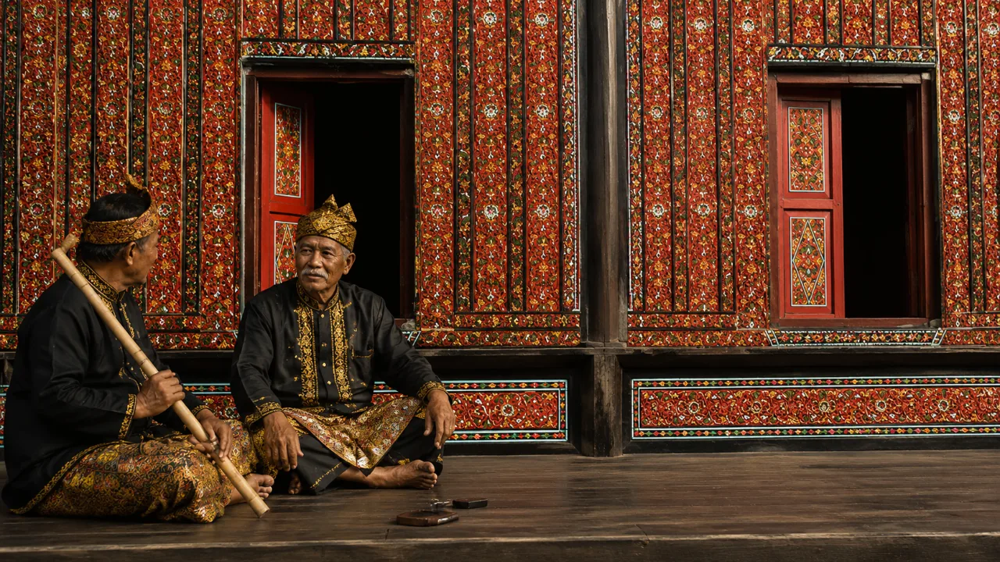
Minangkabau Wood Carving is a mastercraft of decorative bas-relief woodwork adorning the exterior timber walls, window frames, and pillars of the Rumah Gadang. Grounded in the philosophy 'Alam Takambang Jadi Guru' (Nature is our teacher), the motifs stylize botanical and geometric patterns.
In accordance with Islamic principles forbidding literal depictions of living creatures, Minang wood carving utilizes floral arabesques and geometric forms, such as Kaluak Paku (fern tendrils), Aka Cino (flowing vines), and Pucuak Rabuang (bamboo shoots).
"Nature Unfolded is Our Teacher (Wisdom derived from the harmony of the natural world)"
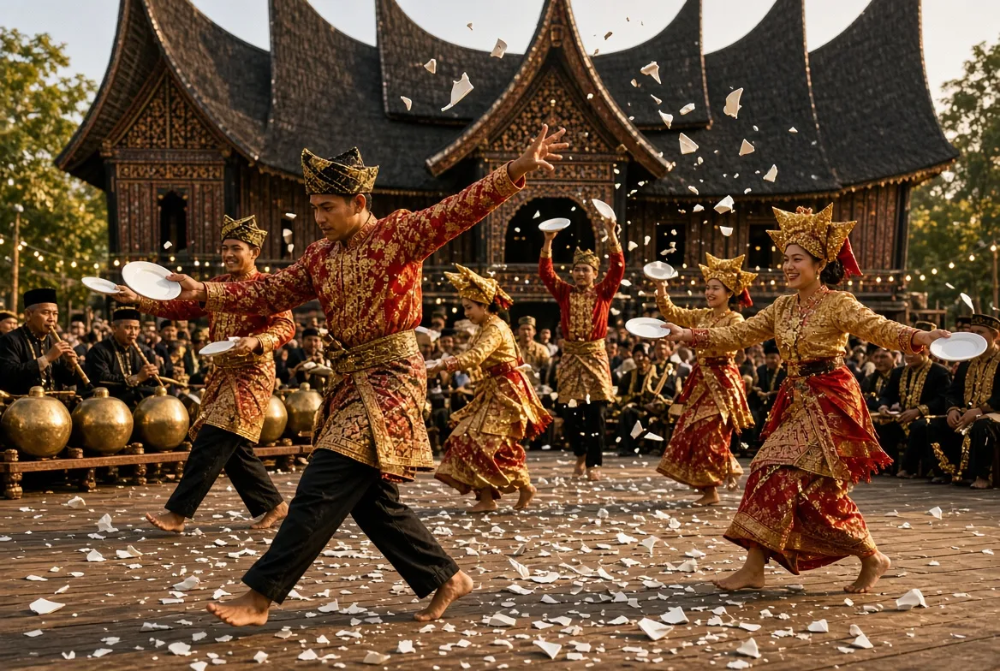
Tari Piring (Plate Dance) is a prized traditional Minangkabau dance originating from Solok and now celebrated on international stages. Dancers deftly hold porcelain plates in the palms of their hands, executing fast, energetic, and dynamic movements synchronized with Talempong percussion and Saluang flutes.
Originally created as a gratitude ritual to deities for bountiful rice harvests, the dance evolved with the advent of Islam into a celebrated folk performance used to welcome honored guests and enrich wedding ceremonies.
"Gratitude for Abundance & Physical Mastery (Deep gratitude for earth bounty and agility)"
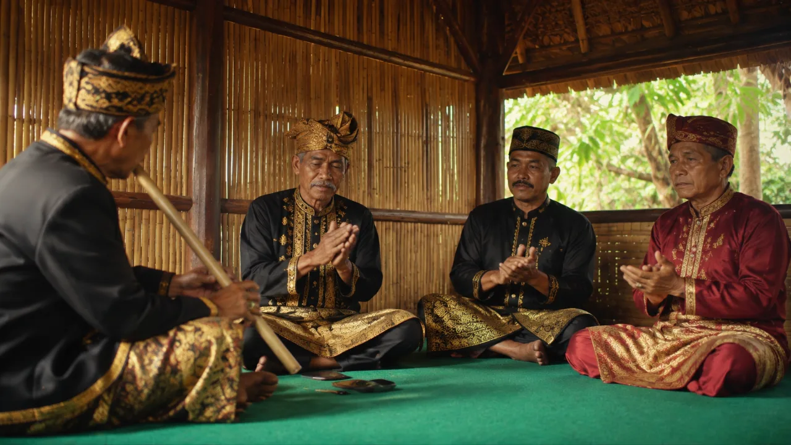
Tradisi Bakaba is the classical Minangkabau oral storytelling art performed by a master narrator (Tukang Kaba). Typically held overnight in traditional village coffee shops or customary halls, it enchants audiences with rhymed epic tales rich in ethical teachings.
The storyteller recites poetic stanzas and lyrical prose accompanied by the haunting bowed notes of the Rebab Pasisia string instrument or Saluang bamboo flute. Famous epics include Kaba Cindua Mato (tales of loyalty and customary law), Malin Deman, and Anggun Nan Tongga.
"Reviving Submerged Trunks (Resurrecting ancestral wisdom, ethics, and oral heritage)"
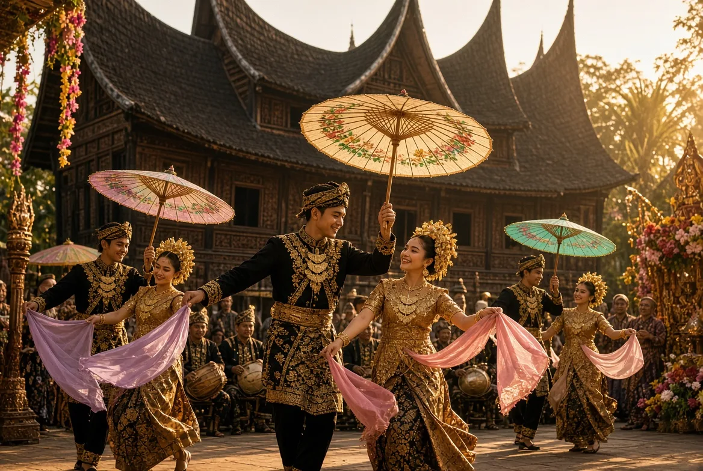
Tari Payung is a traditional Minangkabau couples dance performed with decorative umbrellas and silk scarves. It symbolizes protection, affection, and marital harmony within Minangkabau cultural values.
Male dancers move dynamically while holding an umbrella sheltering their partner's head, representing the man's duty as family protector and guardian. Meanwhile, female dancers move gracefully with flowing silk shawls, symbolizing tenderness, loyalty, and domestic devotion.
"Umbrella of Custom (Men as family protectors and women as pillars of gentleness)"
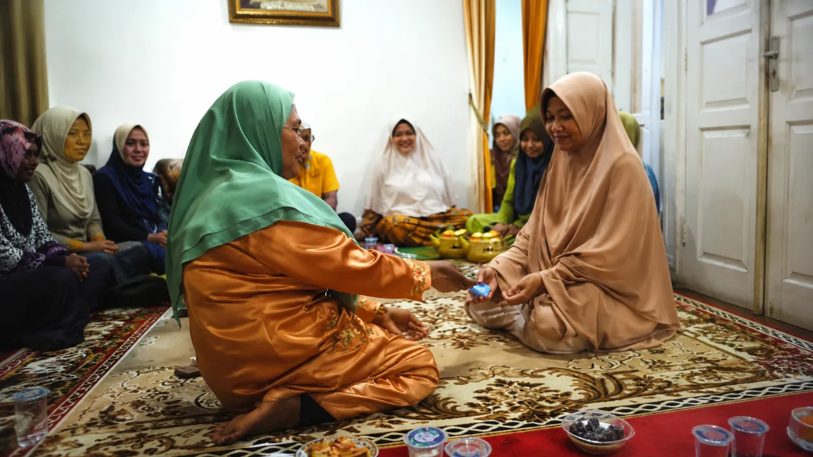
Manyiriah and Batimbang Tando constitute the sacred customary betrothal and engagement ceremony in the Minangkabau matrilineal kinship system. The prospective bride's family sends customary delegates to the prospective groom's family carrying ceremonial betel pouches.
This is followed by Batimbang Tando (exchanging heirloom pledges), where both families exchange valued heirlooms such as gold-embossed keris daggers, antique songket fabrics, or ancestral jewelry before clan elders and religious leaders.
"Water is Rounded by Bamboo, Agreement is Reached through Consensus"
Songket Pandai Sikek is a luxurious traditional handwoven textile from Nagari Pandai Sikek, Tanah Datar Regency, recognized as an Indonesian Intangible Cultural Heritage. Woven manually on non-machine looms, it features premium gold and silver threads woven intricately into silk or cotton fabrics.
Crafting a single piece of Songket Pandai Sikek takes months of painstaking dedication and precision. Carved textile motifs such as saik kalam and bamboo shoots carry deep proverbs about patience, cultural dignity, and blessings for the wearer.
"Woven with Patience for Cultural Splendor (Symbol of meticulous patience and noble dignity)"
Silek Minangkabau is a traditional martial art inherited from Minang ancestors that fuses physical conditioning, sensory awareness, and spiritual depth. More than self-defense, Silek forms an integral part of character building for young Minang men taught in traditional sasaran (dojos).
The core philosophy of Silek states 'Physical Silek Seeks Friends, Inner Silek Seeks God'. This principle teaches that physical moves aim to foster brotherhood and avoid conflict, while inner practice directs martial artists toward spiritual closeness with the Creator.
"Outer Silek Seeks Friends, Inner Silek Seeks God (Physical agility dedicated to harmony)"
Makan Bajamba (also known as Makan Barapak) is a traditional Minangkabau communal dining ritual where participants sit on the floor in circles sharing a large tray laden with food. Originating in the 7th century, it takes place during major religious festivals, tribal ceremonies, and state receptions.
Each jamba tray serves 3 to 6 people, with men sitting cross-legged and women kneeling gracefully. The tray offers a feast of Rendang, Chicken Gulai, Sambal Lado, and rice, finished with sweet Lamang Tapai dessert.
"Sit at Equal Levels, Stand at Equal Heights (Symbol of unity and social equality)"
Randai is a traditional Minangkabau folk theater performance that brilliantly integrates various art forms, including martial arts (silek), dance, drama, vocal chanting (dendang), and music. In the performance, dozens of actors stand in a large circle, stepping dynamically while slapping their baggy traditional trousers, creating an iconic, rhythmic clapping sound.
Dialogues in Randai are not simply spoken; they are chanted or sung in rhythmic poems (gurindam) telling local folktales (kaba). The stories typically revolve around heroic legends or classic Minangkabau romances, such as Malin Kundang, Sabai nan Aluih, or Cindua Mato.
"Circling the Village, Shaping the Mind (Unity in guarding the village and moral character)"

Pacu Kuda is a highly festive Minangkabau traditional sports event that has been passed down since the early 20th century. Unlike modern horse racing, West Sumatra's traditional racing features a unique rule where local young jockeys ride the racehorses entirely bareback (without saddles), demonstrating absolute agility and courage.
The competing horses are crossbreeds between local and superior racing breeds, specifically trained with traditional nutritional diets. Racing arenas, such as Bancah Laweh in Padang Panjang or Bukit Ambacang in Bukittinggi, are consistently packed with tens of thousands of spectators from all regions.
"Awakening the Submerged Trunk (Reviving fighting spirit and village pride)"
The Bundo Kanduang attire is the grand traditional dress of Minangkabau women, representing their noble dignity as 'Limpapeh Rumah Nan Gadang' (The Central Pillar of the Big House). The most iconic feature is the headdress known as Tingkuluak, folded with two pointed ends mimicking buffalo horns or the sweeping gonjong roofs.
The outfit consists of a loose-fitting 'baju kurung basiba' tunic adhering modestly to Islamic principles, paired with a luxurious handwoven songket sarong gleaming with gold threads, and a gold-embroidered sash (salempang) draped over the shoulder symbolizing the responsibility of nurturing the family and village.
"The Central Pillar of the House (Women as the core pillar of clan and cultural harmony)"

The Minangkabau Matrilineal System is the world's largest matrilineal society, tracing lineage and inheritance through the maternal line. Within this framework, descent, clan affiliation (suku), honorary titles, and ancestral high property (harta pusako tinggi) pass strictly from mother to daughter across generations.
Women's central role as Bundo Kanduang makes them the primary owners and custodians of the Rumah Gadang, farmland, and ancestral assets. Meanwhile, Minang men serve as mamak (maternal uncles), managing clan properties and governing customary law for their nieces and nephews (kemenakan), rather than their biological children.
"Maternal Lineage & Female Property Ownership (World Largest Matrilineal Society)"
Silek Harimau is one of the most ancient and renowned traditional martial art lineages in Minangkabau culture, originating from the rugged heartlands of Luhak Nan Tigo. This fighting discipline was forged by ancestral Minang warriors through rigorous observation of the posture, patience, muscular flexibility, and explosive ambush mechanics of the wild Sumatran tiger hunting in the dense rainforests of the Bukit Barisan.
The technical hallmark of Silek Harimau is its extremely low, ground-hugging stance (kuda-kuda marapok), wherein the martial artist crawls unpredictably along the terrain at astonishing velocity. Strikes concentrate on joint locks, low leg sweeps destroying opponent equilibrium, and vicious open-palm claw strikes. Despite its lethal efficacy, practitioners are bound by stringent spiritual ethics emphasizing that martial skill is strictly reserved for self-defense and clan honor, never for vain aggression.
"Outer Art Seeks Fellowship, Inner Art Seeks the Divine (Brotherhood and spiritual discipline)"
Rabab Pasisie is an authentic traditional bowed lute musical art and oral storytelling discipline deeply embedded within the coastal culture of Pesisir Selatan Regency, West Sumatra. The coastal rabab instrument is hand-crafted from aged coconut shells or selected timber resonated with stretched animal skin, bowed to produce a hauntingly plaintive, nasal melodic timbre that stirs profound emotional depth.
A Rabab Pasisie performance is spearheaded by a master oral bard (Tukang Rabab) who bows the instrument while chanting serialized epic folklore stories (kaba) from dusk until dawn. The lyrical narratives weave tales of migratory struggles in foreign lands (merantau), ancestral moral lessons, religious ethics, and social satire, chanted with breathtaking vocal improvisation.
"Oral Lore Imparting Wisdom, Chanting Empathy and Ethics (Preservation of ancestral morality)"
Batagak Kudo-Kudo is an endearing Minangkabau communal mutual aid tradition celebrated when the construction of a Rumah Gadang, family home, or village prayer hall reaches the pivotal phase of raising the timber roof trusses. Philosophically, the 'kudo-kudo' (trestle trusses) represents the structural backbone of the dwelling, dictating the stability and enduring safety of all future occupants.
The hallmark of this ceremony is the spontaneous collective participation of the entire village community and extended maternal clans, who arrive bearing donations ranging from corrugated roofing sheets and cement to timber, nails, and monetary contributions. High atop the erected ridge beam, ceremonial Marawa flags are hoisted alongside hung bunches of golden bananas, coconuts, and sweet sugarcane symbolizing prayers for prosperity, fertility, and domestic harmony.
"Shared Burdens Borne Together (Communal solidarity in Minangkabau societal life)"
Serak Gulo (Scattering of Sugar) is an exceptionally rare annual socio-religious festival practiced across generations by the Indian-descended Muslim community in the Pasar Batipuh quarter of Padang City. Spanning over two centuries since South Asian merchants settled along the Sumatran seaboard in the early 19th century, it stands as vibrant proof of harmonious multicultural coexistence with indigenous Minangkabau society.
Celebrated every 1st of Jumada al-Thani in the Islamic lunar calendar, the festival commemorates the birth of revered Sufi saint Shahul Hamid of Nagore, South India. The rite commences with prayers at the historic 1843 Muhammadan Mosque, after which thousands of pouches containing refined sugar wrapped in colorful textile parcels are showered down from the mosque rooftop into cheering crowds gathered below.
"Sweet Like Sugar, Endless Sharing of Compassion (Multicultural generosity and harmony)"
Bansi is an authentic Minangkabau end-blown bamboo duct flute meticulously crafted from delicate talang bamboo reeds, engineered with 7 finger holes along its upper spine and 1 thumb hole underneath. Unlike the diagonal rim-blown Saluang flute which possesses 4 holes, the Bansi features an internal wooden fipple mouthpiece allowing it to produce a complete diatonically tuned musical scale with ease.
The acoustic signature of the Bansi is melodious, bright, and agile, effortlessly rendering both vivacious Minang folk rhythms (lagu bungo) and deeply contemplative pastoral airs. Within traditional Minangkabau ensembles, the Bansi frequently commands the principal melodic lead, dancing playfully over the rhythmic syncopation of Talempong chime gongs and Gandang drums.
"Subtle Breath of the Bansi Inspires the Soul (Emotional balance and melodic harmony)"
Manyerak Bareh Kunik is an indispensable symbolic ritual in Minangkabau customary ceremonial life, involving the sacred scattering of hand-selected rice grains infused with natural golden turmeric, fragrant shredded pandan leaves, and shiny metallic coins. This rite is conducted during monumental life transitions including the Batagak Penghulu clan chief inaugurations, royal bridal receptions, and Rumah Gadang dedications.
Within Minangkabau cosmology, the golden yellow hue symbolizes royal dignity, the sovereign majesty of customary law, and divine blessing from God Almighty. Rice embodies agrarian sustenance and communal vitality, while the scattered coins serve as living invocations for material abundance and noble generosity toward fellow villagers.
"Gold Signifies Honor, Rice Sows Prosperity (Customary invocations for communal blessings)"
Gandang Tambua and Gandang Tasa constitute the thunderous traditional percussion ensemble of Minangkabau culture, performed synchronously to invigorate customary street processions, cultural festivals, and village celebrations throughout West Sumatra. The Tambua is an imposing double-headed wooden cylindrical drum draped over the player's shoulders, while the Tasa is a hemispherical copper kettledrum struck with flexible rattan batons at lightning tempo.
The electrifying allure of a Gandang Tambua Tasa performance lies in its earth-shaking acoustic volume, intricate syncopated rhythms, and infectious kinetic energy. The lead Tasa drummer functions as the maestro conductor, directing dozens of Tambua drummers through complex rhythmic accelerations interspersed with athletic choreographies executed in seamless unison.
"Resonating to Awaken the Village, Rowing in Unison (Communal unity and vitality)"
The Bakajang Tradition is a spectacular riverine maritime pageant celebrated annually following Eid al-Fitr by the indigenous community of Nagari Gunuang Malintang in Lima Puluh Kota Regency. This pageant reenacts the ancient river expeditions undertaken by Minangkabau royalty and clan chieftains navigating the Batang Mahat River to trade and forge alliances with ancient Malay kingdoms.
During this celebration, five customary clans within the nagari construct and meticulously adorn colossal wooden river vessels up to 10 meters long called 'Kajang'. Each vessel is decorated to resemble an imperial floating Rumah Gadang or royal flagship adorned with intricate wood carvings, sacred Marawa battle standards, and multi-tiered gonjong roofs, navigated by dozens of young men in regal customary attire.
"Sailing Downstream to Weave Kinship (Riverine voyage strengthening ancestral brotherhood)"
Beef Rendang is a culinary masterpiece of Minangkabau recognized internationally as one of the world's most delicious foods by CNN International. Tender beef cuts are slow-cooked for hours in coconut cream infused with authentic spices including galangal, lemongrass, ginger, chili, and kaffir lime leaves.
The cooking journey passes through three stages: starting as gulai (rich soup), reducing into kalio (thick brown curry), and finally drying into deep dark rendang glistened with natural aromatic oils. These spice oils act as natural preservatives, enabling rendang to stay fresh for months without chemical additives.
Sala Lauak is a legendary coastal snack from Pariaman City, recognized as a National Intangible Cultural Heritage (WBTB) in 2010. Created by coastal fishing families to convert daily catches into portable, long-lasting snacks for sea voyages.
The main ingredients consist of coarse rice flour mixed with minced salted fish (ikan maco/stuhuak), turmeric, garlic, ginger, shallots, and finely shredded aromatic turmeric leaves. The batter is deep-fried in hot oil until forming golden ping-pong-sized spheres that are extremely crispy outside yet moist inside.
Palai Rinuak is an extremely rare specialty dish from the shores of Lake Maninjau, Agam Regency. It features Rinuak (Psilopsis sp.), a tiny endemic freshwater fish (1 to 3 cm) found exclusively in Lake Maninjau's waters and nowhere else on earth.
Fresh rinuak fish are mixed with grated coconut, ground red chilies, turmeric, galangal, shallots, garlic, lemongrass, and kaffir lime leaves. The mixture is tightly wrapped in banana leaves (palai/Minang-style pepes), steamed first, then grilled over charcoal until releasing a deeply aromatic smoky fragrance.
Gulai Cancang is a traditional ceremonial curry always present at Minangkabau wedding feasts (baralek) and major cultural celebrations. The name 'Cancang' refers to the distinctive fine dicing technique of the meat into small cubes.
The main ingredients are beef or mutton finely diced into small cubes (including rib cartilage, fat, and bone marrow), slow-cooked in thick coconut milk with ground red chili paste, shallots, garlic, galangal, ginger, star anise, cinnamon, cardamom, nutmeg, and toasted coconut paste (ambu-ambu).
Katupek Gulai Paku is a coastal Minangkabau breakfast staple beloved in Pariaman and Padang. This morning comfort food consists of rice cakes wrapped in woven coconut leaves (katupek/ketupat) served with a creamy yellowish-green fern frond curry.
The fern curry broth uses wild young edible fern fronds cooked in coconut milk spiced with turmeric, ginger, galangal, chilies, lemongrass, and asam kandis. The fresh, crisp texture of young fern shoots pairs perfectly with the soft ketupat and thick coconut broth.
Gulai Tunjang showcases the Minangkabau philosophy of total livestock utilization without waste. The main ingredient is cow foot tendons and surrounding skin/cartilage (tunjang/kikil) boiled for hours until gelatinously tender.
Once soft, the tendons are slow-cooked in thick coconut milk curry with chilies, turmeric, galangal, lemongrass, kaffir lime leaves, garlic, shallots, and asam kandis. The extended slow-cooking process transforms the tendons into an incredibly soft, chewy, gelatin-clear texture.
Pinyaram is a traditional Minangkabau sweet cake from Tanah Datar and Kayu Tanam (Padang Pariaman). This delicacy is an essential offering at major Minang ceremonies including manjapuik marapulai weddings, clan chief inaugurations (batagak penghulu), and Eid celebrations.
The ingredients are simple yet produce extraordinary flavors: fermented white or black glutinous rice flour, melted palm sugar (brown sugar), and coconut milk. Each piece is individually fried in small round wok pans until forming crispy lacy ruffled outer edges with a thick, dense, and soft-chewy center.
Rakik Maco is a traditional coastal West Sumatran cracker from Padang Pariaman Regency, developed by fishing communities to preserve small saltwater fish catches (ikan maco). This large, circular cracker is made from a batter of rice flour, coconut milk, coriander, turmeric, garlic, and shredded kaffir lime leaves.
Whole salted maco fish are placed on top of the batter before deep-frying in hot oil until extremely crisp and crunchy. Its impressively large size makes Rakik Maco visually striking, functioning both as a standalone snack and a crunchy accompaniment to Nasi Padang or lontong.
Ayam Pop is a unique Minangkabau specialty chicken dish originating in Bukittinggi around 1963 at Restoran Family Benteng Indah. Unlike conventional crispy brown fried chicken, Ayam Pop retains a signature pale white appearance with exceptionally tender, juicy, and savory meat.
The culinary secret lies in simmering skinless free-range chicken in pure coconut water infused with minced garlic, lemongrass, bay leaves, and sea salt. Once tender, the chicken is flash-fried in hot coconut oil for only a few seconds to preserve its delicate moisture.
Crispy Bilih Fish Balado features the Bilih fish (Mystacoleucus padangensis), an endemic freshwater species native solely to Lake Singkarak. Harvested daily by local artisanal fisherfolk, these thumb-sized fish are a nutritional treasure.
Seasoned with turmeric and salt, the fish are deep-fried until entirely crispy and brittle—allowing head, fins, and bones to be eaten whole. The crispy fish are tossed in a fragrant, coarsely ground red chili glaze (balado) or green chili sambal sautéd with shallots.
Bareh Randang is an exquisite traditional sweet delicacy from Payakumbuh and Lima Puluh Kota Regency holding ceremonial status in Minangkabau matrimonial gift exchanges (manjalang). 'Bareh' means glutinous rice, while 'randang' refers to dry-roasting over direct heat.
Selected white glutinous rice is dry-roasted with aromatic pandan leaves, finely ground, and kneaded into a rich syrup of boiled palm sugar and thick coconut milk. The dough is pressed into wooden frames and sliced into square confections.
Sate Padang is West Sumatra's iconic beef satay featuring skewers of tender beef cuts, tongue, or offal grilled over coconut shell charcoal until aromatic. What sets Sate Padang apart is the generous pouring of thick, golden-yellow or reddish spice gravy over the skewers.
The gravy is prepared from rich beef stock thickened with rice flour and blended with dozens of freshly ground spices including turmeric, coriander, cumin, and lemongrass. Regional variations offer unique gravy profiles, such as Padang Panjang's savory golden sauce and Pariaman's fiery red sauce.
Gulai Gajebo—often hailed as the 'Holy Grail of Beef Connoisseurs'—is a legendary coastal Minangkabau delicacy featuring tender beef brisket layered with thick, velvety white brisket fat (gajebo).
The remarkable uniqueness of this dish is that, despite being called 'Gulai', authentic Gajebo contains NO COCONUT MILK. Its glistening red broth is created entirely by rendering rich beef fat into an acidic asam padeh base seasoned with asam kandis, crushed red chilies, turmeric leaves, and lemongrass.
Sate Lokan is a coastal seafood satay specialty from Pesisir Selatan and Pariaman utilizing wild-harvested estuary clams (lokan) gathered by hand from the mud beds of mangrove river estuaries.
The succulent, chewy clam meat is boiled with lemongrass, ginger, and turmeric, skewered, and grilled over coconut-shell charcoal until fragrant. It is smothered in a thick golden-red spiced curry sauce enriched with turmeric, coriander, cumin, and rice flour.
Keripik Sanjai is the quintessential culinary souvenir from Bukittinggi, crafted by the artisan families of Kampung Sanjai in Manggis Ganting since the early 20th century. It features locally sourced cassava sliced paper-thin and fried to a crisp golden crunch.
The most famous variety is Sanjai Balado, where crisp cassava chips are coated in a glossy, sticky ruby-red glaze of reduced red chilies, palm sugar, garlic, and tamarind simmered to a thick caramel consistency.
Kue Bika Koto Baru is a beloved mountain cake baked at roadside stalls along the chilly mountain pass of Koto Baru between Padang Panjang and Bukittinggi, nestled beneath Mount Singgalang and Marapi.
The batter combines rice flour, freshly grated young coconut, coconut water, and palm sugar (red bika) or cane sugar (white bika). Spooned into clay molds lined with banana or teak leaves, it is baked using the traditional 'Two-Fires' method—charcoal glowing underneath and burning on the iron lid above.
Bubur Kampiun is Bukittinggi's legendary composite sweet breakfast and dessert created in the 1960s by Hj. Aida Saunan. Named 'Kampiun' (from champion) after winning first prize in a regional culinary contest.
The genius of Bubur Kampiun is harmonizing 6 to 7 distinct sweet puddings in a single bowl upon order: steamed sticky rice, velvety savory rice flour pudding (sumsum), sweet black glutinous rice, banana-sweet potato palm colac, mung bean porridge, chewy sweet potato balls (candil), and tapioca pearls.
Gulai Jariang is an authentic highland Minangkabau curry elevating jengkol beans (Archidendron pauciflorum) into a deeply cherished culinary delicacy with a tender, meaty texture.
Mature jengkol beans are boiled with guava leaves to mellow their pungent aroma, then gently crushed (ditokok) so the beans flatten and open up. They are slow-cooked in thick coconut curry broth spiced with turmeric, chilies, lemongrass, galangal, kaffir lime leaves, and asam kandis.
Lompong Sagu is an ancient traditional delicacy from coastal West Sumatra representing pre-colonial food culture when native sago palm starch was a dietary staple alongside ripe bananas.
The recipe combines pure sago flour, coarsely mashed ripe bananas, grated young coconut, and palm sugar. Wrapped in fresh banana leaves, it is grilled over glowing coconut charcoal until the leaf chars and releases a caramelized aroma.
Teh Talua (Minang Egg Tea) is a legendary warm beverage from West Sumatra celebrated for boosting stamina and serving as the signature drink enjoyed at traditional lapau (coffee shops). This unique drink combines whisked egg yolk with boiling, concentrated black tea.
Preparing it requires practiced technique: free-range chicken or duck egg yolk is vigorously whisked with sugar using a wooden whisk until forming a light, creamy foam. When scalding hot black tea is poured into the glass, the mixture magically separates into distinct, eye-catching layers.
Lamang Tapai is a traditional Minangkabau snack combination offering a delightfully unique blend of savory and sweet-sour flavors. Lamang is made from white glutinous rice cooked with coconut milk inside young bamboo tubes lined with banana leaves, slowly roasted over wood fire coals.
Tapai is fermented black glutinous rice prepared with traditional yeast, resulting in a soft, juicy texture with a refreshing sweet-tangy taste. To serve, slices of savory, bamboo-scented lamang are generously topped with spoonfuls of juicy black tapai.
Dendeng Balado and Dendeng Batokok are iconic Minangkabau beef specialties celebrated for their crispy or tender textures paired with vibrant chili sambal. Dendeng Balado features paper-thin slices of beef fried crisp and generously coated in coarse red chili sambal infused with coconut oil aromas.
In contrast, Dendeng Batokok uses boiled spiced beef that is tenderly pounded (batokok) with a stone pestle to loosen the meat fibers, then flame-grilled and topped with tangy green chili (lado mudo) sambal and fried shallots.
Gulai Itiak Lado Mudo is a legendary specialty dish hailing from the Sianok Canyon and Koto Gadang area in Bukittinggi. The dish features fresh young duck cooked in an extremely rich curry sauce dominated by massive amounts of crushed green chilies (lado mudo).
The cooking process requires specific techniques to eliminate the duck's gamey scent, usually by briefly roasting it over an open fire before slow-cooking it with coconut milk and herbs like turmeric leaves, lemongrass, and galangal. The result is fall-off-the-bone tender duck meat perfectly infused with spices down to the bone.
Soto Padang is a spiced beef broth soup that warms the soul and is popular throughout the city. The main characteristic of Soto Padang is its clear broth which is incredibly rich in aromatic spices like cardamom, cloves, cinnamon, and star anise, distinguishing it from the often turbid yellow sotos of Java.
The fillings of Soto Padang are highly appetizing, consisting of glass noodles (soun), soft potato croquettes (perkedel), and slices of beef that have been deep-fried to a crisp (dendeng). The crunchiness of the fried beef provides a unique textural sensation when eaten with the hot broth.
Ampiang Dadiah is a unique and incredibly healthy traditional Minangkabau dessert, often dubbed the 'Yogurt of West Sumatra'. Dadiah itself is pure buffalo milk naturally fermented inside fresh bamboo tubes covered with banana leaves for several days, thickening into a panna cotta-like texture.
To serve, this tangy and refreshing Dadiah is combined with Ampiang, which are flattened red glutinous rice flakes. The mixture is then generously drizzled with thick, sweet liquid palm sugar and sprinkled with freshly grated coconut.
Nasi Kapau originates from Nagari Kapau in Tilatang Kamang, Agam Regency, dating back to the 19th century. During the merantau migration era, wives remaining in the village opened roadside eateries to feed travelers and support their households. The most legendary dish is Gulai Tambusu.
Gulai Tambusu is made from cleaned cow intestine stuffed with a mixture of whisked duck/chicken eggs, finely crushed tofu, garlic, shallots, coriander, and nutmeg. The stuffed intestine is then slowly simmered in an extremely rich coconut curry broth with turmeric, galangal, lemongrass, red chilies, and asam kandis.
Asam Padeh (literally meaning 'sour and spicy' in the Minangkabau tongue) stands out as an iconic Minang culinary masterpiece uniquely prepared entirely without coconut milk. Unlike the majority of creamy coconut-based Minang dishes, Asam Padeh features a vibrant, fiery crimson broth stewed from ground red chilies, dried asam kandis fruit, lemongrass, turmeric leaves, wild ruku-ruku basil, and ginger.
The principal protein ranges from tender beef brisket to fresh oceanic fish such as tuna, red snapper, or Spanish mackerel. The flavor profile is electrifying, harmonizing sharp chili heat with the refreshing fruit acidity of native asam kandis and the aromatic citrus notes of ruku-ruku herbs which naturally eliminate gaminess.

Samba Lado Tanak is an ancestral artisanal sambal relish hailing from the agrarian highlands of Minangkabau, crafted through the slow 'tanak' reduction method wherein fresh coconut milk is simmered with pounded chilies and assorted condiments over low heat until reduced to a fragrant, oil-glistening crimson relish. Historically, it served as a trusted shelf-stable provision for rice farmers heading to fields and travelers on long journeys.
The dish features an opulent array of ingredients, uniting dried anchovies (ikan teri), tender stink beans (petai), boiled quail eggs, and baby potatoes. The aromatic spice paste incorporates crushed red chilies, shallots, garlic, turmeric, galangal, kaffir lime leaves, and asam kandis simmered for hours until the coconut milk renders its rich, unctuous coconut oils.
Gulai Banak ('banak' translating to brain in the Minangkabau tongue) is an esteemed delicacy showcased at premier traditional Padang and Nasi Kapau establishments. Prepared from impeccably fresh beef brain delicately cleaned of fine vascular membranes, this dish has historically been reserved as a dish of honor for clan chieftains (ninik mamak) during high customary ceremonies.
Cooking Gulai Banak demands culinary finesse to keep the brain intact and achieve a silky, custard-like consistency without breaking apart. It is gently simmered in a golden turmeric coconut curry infused with galangal, lemongrass, aromatic daun mangkokan (shield aralia leaves), and asam kandis, ensuring a fragrant herbal aroma and complete elimination of gaminess.
Rendang Lokan is a legendary coastal rendang variation indigenous to Pesisir Selatan Regency, substituting beef with fresh wild estuary clams (lokan) harvested from brackish river deltas. Coastal Minangkabau communities along the Inderapura and Batang Tarusan estuaries have prepared clam rendang for centuries, showcasing ancestral mastery over marine foraging.
Fresh clams retrieved from riverbed mud are meticulously purged and cleaned, then slowly braised with pure coconut milk and the complete repertoire of Minang rendang aromatics: crushed chilies, ginger, galangal, lemongrass, turmeric leaves, and asam kandis. The reduction is coaxed over hours until the coconut fats caramelize into rich dark-brown spice crumbles coating each succulent clam.
Kawa Daun is a storied herbal beverage from the Minangkabau highlands brewed not from coffee beans, but from dried and smoke-roasted coffee leaves. The beverage was conceived during the harsh 19th-century Dutch colonial Cultuurstelsel (forced cultivation system), when all coffee beans were seized for European export, prompting ingenious Minang locals to brew the discarded coffee leaves as a restorative warm drink.
Hand-selected coffee leaves are slowly smoked and toasted over firewood until crisp, aromatic, and deep brown. The roasted leaves are boiled in earthen clay pots, yielding a golden-amber brew with a smoky herbal aroma rich in beneficial antioxidant polyphenols.
Kipang Kacang is a legendary sweet confection originating from coastal Pariaman City, crafted across family workshops for more than a century. This crunchy brittle exemplifies local artisanal ingenuity, combining premium locally grown peanuts with pure palm sugar caramel into an enduring traditional snack.
The preparation begins by dry-roasting selected peanuts until exceptionally crisp, then tossing them into bubbling pure palm sugar caramel simmering in large copper cauldrons. The hot caramel-nut mixture is swiftly spread onto wooden tables, compressed with rolling pins, and cut into neat rectangular bars before cooling into brittle.
Dadiah is the ancient traditional fermented buffalo milk curd of the Minangkabau highlands, naturally cultured inside raw bamboo cylinders for centuries. Scientifically recognized as one of the world's most nutritious natural probiotic foods, Dadiah is packed with beneficial lactic acid bacteria, bio-available proteins, and digestive wellness nutrients.
Its production relies on pure spontaneous fermentation without artificial starters or chemicals: freshly milked water buffalo milk is strained directly into unvarnished talang bamboo stalks, sealed with banana leaves or taro leaves. Natural endemic microflora thriving within the bamboo walls initiate lactic fermentation at ambient room temperature over 24 to 48 hours, transforming the liquid into an unblemished, silky white porcelain curd.
Gulai Kurma is one of the most prestigious celebratory curries in Minangkabau gastronomic culture, customarily featured during grand wedding feasts (baralek) and communal bajamba banquets. Despite its name, the dish contains no dates; rather, 'kurma' reflects the warm, sweet aromatic spice bouquet of cloves, green cardamom, cinnamon, and nutmeg reminiscent of ancient Middle Eastern trading influences.
The visual hallmark of Gulai Kurma is its pale ivory-golden hue, cooked entirely without red chilies. The base paste features shallots, garlic, ginger, toasted coriander, candlenuts, cumin, and galangal sautéed with star anise, lemongrass, and kaffir lime leaves before simmering in coconut milk with tender beef or mutton chunks.
Pangek Masin is an artisanal freshwater fish dish hailing from the lake basins and river valleys of West Sumatra. The culinary term 'pangek' denotes a slow braising technique conducted in a tightly lidded pot over low heat until the coconut broth reduces into a thick concentrated glaze, while 'masin' refers to its distinctive savory-salted turmeric spice character.
The centerpiece protein typically features freshly harvested freshwater carp, tilapia, or native lake fish marinated in grated turmeric, shallots, whole bird's eye chilies, bruised lemongrass, wild ruku-ruku basil, and tart bilimbi fruit. Clay pots are traditionally lined with thick banana leaves at the base to prevent scorching while imparting an intoxicating herbal aroma.
Karupuak Sanjai Batokok and Karupuak Kuah Sate represent two quintessential street snack phenomena deeply ingrained in the bustling traditional market life of Bukittinggi and West Sumatra. Pioneered by cassava artisans in Sanjai village since the mid-20th century, these snacks stand as beloved democratic culinary icons.
'Sanjai Batokok' is crafted from choice cassava slices manually tenderized and pounded with wooden mallets (*ditokok*) before deep-frying to ethereal crispness, then glazed in glistening spicy-sweet palm sugar balado sambal. Meanwhile, 'Karupuak Kuah' features a broad plate-sized circular red cassava cracker drenched in rich, piping-hot spiced yellow sate gravy and garnished with savory fried vermicelli noodles.
Pacu Jawi is a legendary Minangkabau cultural tradition celebrated for centuries across Tanah Datar Regency, notably in the historic sub-districts of Pariangan, Rambatan, Lima Kaum, and Sungai Tarab. Originating as a festive post-harvest thanksgiving ritual, it also serves as an arena for local farmers to showcase the agility, speed, and health of their prized working cattle.
The signature thrill of Pacu Jawi lies in the daring jockey balancing bare-foot on a wooden plow frame while gripping the tails of a pair of charging bulls sprinting across deep, wet mud. Jockeys often bite the bulls' tails to urge maximum speed; the pair that runs the straightest and fastest commands the highest prestige and significantly increases the bull's market value.
Solok 5 Lakes Ecotourism Festival is an integrated nature, culture, and sports festival celebrating the unique geography of Solok Regency, home to the largest collection of natural volcanic lakes in West Sumatra. Featured in the prestigious Karisma Event Nusantara (KEN) calendar, it spotlights five pristine lakes: Lake Singkarak, Lake Diatas, Lake Dibawah, Lake Talang, and Lake Tuo.
Festival events span multiple scenic lakeside venues, combining competitive dragon boat regattas, crater trekking excursions around Mount Talang, local cultural parades, and highland specialty Arabica coffee exhibitions from Alahan Panjang. Set against the crisp, cool 1,500-meter altitude climate of the Twin Lakes, open-air stages host energetic plate dancing and contemporary Minang musical compositions.
Sawahlunto International Music Festival (SIMFes) is a world-class ethnic and contemporary world music festival held in the historic city of Sawahlunto, West Sumatra. Curated within the national Karisma Event Nusantara (KEN) roster, SIMFes fosters a vibrant cross-continental musical dialogue bringing together celebrated international artists with master composers of Minangkabau and Indonesian traditional arts.
The defining highlight of SIMFes is its atmospheric concert stages set within the preserved industrial heritage architecture of the UNESCO-listed Ombilin coal mining complex, including the Gudang Ransum Museum, Coal Silos, and Segitiga Square. The haunting melodies of saluang bamboo flutes and rhythmic talempong gongs blend seamlessly with world jazz, African percussion, and classical orchestrations.
Festival Pesona Mentawai is Indonesia's most authentic indigenous cultural gathering, celebrated across the pristine archipelago of the Mentawai Islands in the Indian Ocean. Endorsed by the national Karisma Event Nusantara (KEN) program, the festival is dedicated to honoring the ancestral wisdom, spirituality, and living megalithic heritage of the indigenous Mentawai people.
Visitors are granted rare firsthand access to sacred healing rituals performed by Sikerei (traditional shamans), mystical Turuk Laggai bird and animal dances, live demonstrations of the world's oldest hand-tapped tattooing tradition (Titi Mentawai), and bark-cloth apparel crafting (Baiko). On the coastline, the festivities are matched with high-octane surfing showcases on world-class barrel waves.

Alek Bakajang is a distinct riverine heritage festival officially designated as an Indonesian National Intangible Cultural Heritage (WBTb) and celebrated under the Karisma Event Nusantara (KEN) banner. Held annually from the 3rd to 7th of Shawwal following Eid al-Fitr in Nagari Gunuang Malintang, Lima Puluh Kota Regency, it serves as a sacred embodiment of kinship and solidarity among the village's five customary clans.
The centerpiece of the festival is the ceremonial voyage of intricately decorated kajang riverboats, beautifully crafted into floating replicas of traditional Rumah Gadang palaces and majestic vessels adorned with colorful Minang motifs. Each decorated vessel represents a customary clan pillar navigating along the clear waters of the Batang Maek River to conduct formal kinship visitations with clan chiefs.
Langkisau Coastal & Sports Festival is the premier marine tourism and aerosport event in western Sumatra, held annually every April to celebrate the founding anniversary of Pesisir Selatan Regency. Centered around Carocok Beach in Painan and the summit of Bukit Langkisau, the festival seamlessly blends breathtaking tropical sea landscapes with vibrant cultural festivities and extreme sports.
The crown jewel of the event is the national and international paragliding and hang-gliding championship, where pilots launch from the 400-meter crest of Langkisau Hill to glide over azure waters and land on Salido Beach against a 360-degree panorama of Painan Bay. Coastal waters come alive with traditional wooden boat races, beach volleyball cups, and illuminated flotilla parades.
Pasaman Maapam Heritage Culinary Festival is a proud communal culinary tradition celebrated across Pasaman and West Pasaman Regencies. Held annually during the holy month of Rajab in the Islamic calendar to commemorate the ascension of Isra Mi'raj, this mass apam cooking ritual has been handed down through generations as an act of charity, gratitude, and spiritual purification.
Thousands of village women (Bundo Kanduang) assemble in open town squares to cook traditional apam cakes simultaneously over hundreds of earthenware cauldrons and crackling firewood stoves. The delicate rice-flour batter is slow-steamed over fresh banana leaves, producing soft, fragrant cakes served with rich, warm palm-sugar coconut milk syrup.

Pasa Harau Art & Culture Festival is an enchanting eco-arts and cultural celebration hosted within the dramatic granite wonderland of Harau Valley in Lima Puluh Kota Regency. Featured in the national Karisma Event Nusantara (KEN) calendar, the festival transforms the sheer 300-meter monolithic canyon walls into a majestic natural open-air amphitheater.
The festival showcases a captivating artistic dialogue between traditional Minangkabau masters and contemporary artists from across Indonesia and abroad. Highlights include colossal Randai folk-theatre performances below the cliffs, nighttime acoustic ethnic concerts under starlit skies, eco-campsites, cultural village processions, and environmental visual arts workshops.
Festival Muaro Padang is a vibrant waterfront and urban heritage carnival celebrated along the scenic Batang Arau river corridor and Siti Nurbaya Bridge in Padang City. Organized during the festive Eid holiday season, the event commemorates the maritime legacy and historical charm of West Sumatra's oldest trading port and colonial riverfront.
A dynamic array of attractions draws tens of thousands of visitors, featuring competitive dragon boat regattas (selaju sampan), an illuminated evening flotilla parade along the river, vintage street-food bazaars serving nostalgic Padang delicacies, and open-air jazz and ethnic acoustic stages beside the water.
Pamalayu Historical Heritage Festival is a monumental archaeological and cultural commemoration held in Dharmasraya Regency, reviving the golden era of the 13th-century Malayu Dharmasraya Kingdom (Swarnabhumi). Centered around the ancient brick sanctuaries of Padang Roco Temple and the Batanghari River, it commemorates the historic Pamalayu Expedition and ancient Nusantara diplomatic alliances.
The festival program features a ceremonial historical boat flotilla along the great Batanghari River, exhibitions of rare archaeological treasures including replicas of the sacred Amoghapasa statue and Padang Roco inscriptions, international Malay cultural symposiums, traditional dance festivals, and youth heritage camps.
Minang Traditional Horse Racing Cup (Pacu Kudo) is a prestigious equestrian heritage sport deeply ingrained in the cultural identity of the Minangkabau highlands for over a century since the 1880s. Staged rotationally throughout the year at historic racetracks including Bukit Ambacang in Bukittinggi, Kubu Gadang in Payakumbuh, and Kandi in Sawahlunto.
The most thrilling and daring hallmark of Pacu Kudo is the remarkable skill of young traditional jockeys who ride powerful racehorses completely bareback without saddles at breakneck speeds. The roar of tens of thousands of spectators packing natural hillside viewing banks merges with thunderous hoofbeats and rising dust, generating an electrifying folk festival atmosphere.

Tour de Singkarak (TdS) is a prestigious international road cycling race established in 2009, ingeniously designed to combine elite world-class sports competition with the celebration of West Sumatra's breathtaking landscapes and rich cultural heritage. Named after the iconic Lake Singkarak, the race is officially sanctioned under the UCI Asia Tour calendar.
The challenging race course winds across more than a dozen regencies and cities throughout West Sumatra, testing world-class cyclists against punishing mountain climbs along the Barisan Range, legendary hairpin curves like Kelok 44 and Kelok 9, and scenic coastal highways facing the Indian Ocean. Cheering local villagers line the roadsides en masse to greet peloton riders with traditional music and vibrant festivities.
Danau Maninjau & Kelok 44 Scenic Festival is an integrated tourism celebration fusing the geological grandeur of Lake Maninjau's ancient volcanic caldera with the thrilling challenge of the legendary 44 hairpin mountain curves (Kelok 44) in Agam Regency. The festival showcases highland sport tourism, traditional lakeside arts, and ecological conservation.
Key attractions include the grueling Kelok 44 uphill mountain race challenging runners through misty highland switchbacks, paragliding competitions launching from the panoramic ridge of Puncak Lawang to land beside the water, illuminated lake flotillas, and floating concert stages featuring traditional Saluang flutes and energetic Tambua Tasa drumming.
Hoyak Tabuik Cultural Festival is one of the oldest and most colossal coastal heritage spectacles in Western Sumatra, held annually from the 1st to the 10th of Muharram in Pariaman City. Rooted in traditions dating back to the early 19th century, this iconic festival is officially recognized in the prestigious Karisma Event Nusantara (KEN) calendar by the Ministry of Tourism and Creative Economy.
The ten-day ritual sequence unfolds through a series of sacred symbolic stages: Maambiak Tanah (gathering sacred soil), Manabang Batang Pisang (cleaving the banana stalk), Maatam, and Maarak Saroban. The monumental climax features two towering 12-meter effigies—Tabuik Pasa and Tabuik Subarang—paraded, danced, and energetically hoisted (dihoyak) by tens of thousands of participants to the thunderous, hypnotic beats of gandang tasa drums.
Rang Solok Baralek Gadang Festival is a grand agrarian cultural celebration honoring the legendary Solok Rice (Bareh Solok) as one of the archipelago's finest heritage grains and a cultural cornerstone of Minangkabau society. Selected for the national Karisma Event Nusantara (KEN) roster, the festival takes place directly within the sprawling organic paddy fields of Hamparan Sawah Solok facing Mount Talang.
A rich variety of ancestral ceremonies and lively folk games take center stage in the muddy fields, including the sacred Batulak Bala blessing rite, ceremonial jamba food tray processions by hundreds of Bundo Kanduang elders, upiah palm leaf racing, and mud martial arts (silek lumpur). The spirit of communal solidarity culminates in a massive open-air Makan Bajamba communal banquet on the field dykes.
Sawahlunto International Songket Silungkang Carnival (SISSCa) is an internationally acclaimed street couture and heritage textile festival held in the historic mining city of Sawahlunto, a designated UNESCO World Heritage site. Consistently curated within the national Karisma Event Nusantara (KEN) program, SISSCa serves as a premier global platform for celebrating and preserving authentic Silungkang Songket weaves.
Throughout the festival, the cobblestone streets and Dutch colonial avenues of the old town transform into the longest open-air runway in West Sumatra. Hundreds of visionary designers from across Indonesia and abroad showcase breathtaking avant-garde carnival costumes that integrate intricate gold-threaded Songket motifs with modern artistic creativity.
Payakumbuh Botuang Festival is an innovative arts and ecological celebration that explores the multifaceted significance of botuang (bamboo) in the cultural fabric of the Luak Limopuluah region. Staged amidst the verdant highlands of Panorama Ampangan, the festival bridges ancient Minangkabau heritage with eco-conscious contemporary artistic expression.
Master musicians, artisans, architects, and choreographers from across the nation gather to craft monumental bamboo sculptures, perform on rare ethnic bamboo instruments such as talempong botuang and sampelong flutes, and present immersive open-air nature theatricals. Visitors are also treated to traditional lamang tapai and authentic dishes slow-cooked inside freshly harvested bamboo tubes.
Festival Pesona Minangkabau is the crowning cultural extravaganza in West Sumatra, staged against the majestic historical backdrop of Istano Basa Pagaruyung Palace in Tanah Datar Regency. As a flagship event within the national Karisma Event Nusantara (KEN) calendar, it serves as the ultimate showcase representing the full spectrum of Minangkabau customs, performing arts, and philosophical values.
The grand festival features awe-inspiring spectacles including a grand cultural parade of thousands of Bundo Kanduang matriarchs in regal traditional attire from all 19 cities and regencies, MURI record-breaking Makan Bajamba communal feasts, plate-dancing feats over shattered glass, ancient silek tuo martial arts exhibitions, and classical orchestral performances.

Siti Nurbaya Cultural Festival is a coastal arts, heritage, and literary celebration held annually to commemorate the founding anniversary of Padang City. Inspired by Marah Rusli's timeless Minangkabau literary masterpiece, this Karisma Event Nusantara (KEN) festival unfolds across historic landmarks including Padang Old Town, Siti Nurbaya Bridge, and the Batang Arau riverfront.
The festival lineup features grand musical theatrical reenactments of the Siti Nurbaya romance, an elaborate parade of thousands wearing traditional Baju Kuruang Basiba attire, mass rendang cooking competitions (marandang), traditional riverboat regattas, and multicultural parades showcasing peaceful coexistence among Minang, Chinese, Nias, and Javanese communities.
Rakik-Rakik Floating Festival is a sacred lacustrine heritage tradition cherished for generations across the villages surrounding Lake Maninjau in Agam Regency. Celebrated on the eve of Eid al-Fitr (1st of Shawwal) and during the holiday season, this vibrant festival expresses the communal joy and spiritual triumph of the villagers following the holy month of Ramadan.
Each lakeside nagari unites to construct massive floating bamboo rafts (rakik), elaborately sculpted into illuminated miniatures of traditional Rumah Gadang palaces, multi-tiered mosques, or ancient royal barges adorned with hundreds of oil torches. Floating across the lake waters, villagers ignite traditional carbide bamboo cannons, producing thunderous booming echoes that reverberate against the towering volcanic caldera walls.

Pacu Itiak (Flying Duck Race) is an extraordinary traditional sporting pageant with no parallel anywhere else on the globe, held exclusively in Payakumbuh City and Lima Puluh Kota Regency. Originating in the early 20th century, the spectacle arose from astute village duck herders who discovered that native female ducks possessed the rare aeronautical capability of soaring long distances across rice field basins.
During a Pacu Itiak tournament, highly conditioned ducks are launched into the air by their jockeys at the starting post, gracefully flapping their wings to fly distances ranging from 800 to 2,000 meters toward the designated finish boundary. Referees positioned along the open-air course judge flight velocity, trajectory straightness, and precision landing within marked finishing quadrants without touching the ground prematurely.

The Lake Singkarak Heritage Festival is a premier annual cultural and watersports celebration held along the shores of West Sumatra's second largest tectonic lake, spanning both Solok and Tanah Datar Regencies. The festival celebrates the indigenous lake basin heritage, champions the conservation of endemic bilih fish (Mystacoleucus padangensis), and elevates Singkarak's geopark wonders on the global tourism map.
The festival lineup features colorful flotillas of traditional wooden dragon boats adorned in Minang Rumah Gadang motifs, open-water swimming marathons, artisan songket textile showcases, and colossal open-air performances of Tari Piring plate dances and Silek martial arts on floating waterfront stages. Crowds gather to soak in the resonant chimes of Talempong gongs carried on refreshing mountain breezes.

The Serak Gulo Padang Heritage Festival is a landmark annual multicultural gathering celebrating the historic showering of tons of sugar from the rooftop of the 1843 Muhammadan Mosque in Old Town Padang. Organized jointly by the Indian-descended Muslim community and native Minangkabau citizens, the festival shines as an enduring emblem of inter-ethnic harmony and religious tolerance in West Sumatra.
The morning begins with communal volunteers assembling thousands of small textile pouches filled with refined sugar. By late afternoon, thousands of spectators spanning diverse ethnicities and generations converge upon the boulevard fronting the mosque; to the thunder of celebratory drums, elders toss thousands of sweet parcels into the jubilant crowds below who reach out joyously to catch the symbolic blessings.

The Grand Minangkabau Marandang & Culinary Festival is West Sumatra's foremost gastronomic celebration honoring Rendang's global acclaim as one of the world's most delicious dishes. Gathering hundreds of master village cooks, Bundo Kanduang matriarchs, and artisanal culinary producers from all 19 regencies and municipalities of West Sumatra, the festival showcases the simultaneous cooking of rendang over hundreds of open firewood hearths.
Throughout the event, the intoxicating aroma of caramelizing coconut milk and roasted spices envelops the city plaza, generating an exhilarating public celebration. Esteemed culinary judges evaluate the authenticity of traditional 'marandang' reduction techniques progressing from soupy gulai through thick kalio to the prized dark-brown caramelized finish.

The Air Bangis Marine Festival is an annual coastal cultural celebration hosted at Air Bangis Port Bay, the northernmost maritime gateway of West Sumatra's western coastline. Air Bangis boasts a storied maritime history as one of Sumatra's oldest operational harbours, welcoming international merchant vessels since the Inderapura Sultanate and early VOC eras.
The festival dazzles with regattas of decorated traditional wooden sailing boats, coastal angling competitions, and dynamic seaside dance performances staged upon harbor piers against the backdrop of idyllic tropical islands like Pulau Panjang and Pulau Pigago. Crowds gather to revel in the untouched marine splendor of the open Indian Ocean.
The Batang Arau Heritage Festival is a captivating celebration of history, urban revitalization, and performing arts unfolding along the banks of the Batang Arau River in historic Old Town Padang. This district stands as a silent witness to 19th-century maritime trade where spice galleons berthed alongside monumental Dutch colonial trading houses and Indische Empire warehouses.
The festival lineup features vibrant illuminated dragon boat regattas on the river estuary, vintage and Minangkabau costume pageants across the Siti Nurbaya Bridge, evening floating lantern ceremonies, and exhibitions of colonial photographic archives. Heritage facades are bathed in architectural lighting, transforming the old harbor quarter into a breathtaking living museum.
Your comprehensive intelligent companion to explore the authentic wonder of Ranah Minang.
© 2026 Malala. All rights reserved.
Compiled with passion for West Sumatra Tourism.